<title>Krita AI Reloaded</title>
<meta name="claude:viewport-fit-sides" content="cover">
<meta name="description" content="A usability-focused fork of the Krita AI Diffusion plugin: sequential wildcards, visual LoRA and recipe browsers, Loop Generate, local prompt tools and a history you can search and rate.">
<meta property="og:type" content="website">
<meta property="og:title" content="Krita AI Reloaded">
<meta property="og:description" content="Generate faster. Browse visually. Run it again. A usability fork of the Krita AI Diffusion plugin.">
<meta property="og:url" content="https://fatguy84.github.io/krita-ai-reloaded/">
<meta property="og:image" content="https://fatguy84.github.io/krita-ai-reloaded/og.jpg">
<meta property="og:image:width" content="1200">
<meta property="og:image:height" content="630">
<meta property="og:image:alt" content="Krita AI Reloaded: the logo and tagline over a wall of generated night-train images">
<meta name="twitter:card" content="summary_large_image">
<link rel="preconnect" href="https://fonts.googleapis.com">
<link rel="preconnect" href="https://fonts.gstatic.com" crossorigin>
<link rel="stylesheet" href="https://fonts.googleapis.com/css2?family=Barlow:wght@400;500;600;700&family=Barlow+Condensed:wght@700&family=JetBrains+Mono:wght@400;500&display=swap">
<style>
/* Layout: one column of feature bands, each pairing a short claim with the real plugin surface
   (an interactive docker mock in the hero, recorded clips and HyperFrames explainers below, a CSS
   ticker, scroll reveals and counters). Tokens from branding/design-system/tokens.json. */
:root {
  --surface-000: #0e0b07;
  --surface-100: #17120c;
  --surface-200: #241c13;
  --surface-300: #2e2418;
  --ink: #f6ecdd;
  --ink-muted: #c4b49c;
  --amber-400: #ffb020;
  --amber-300: #ffc24d;
  --orange-600: #ff6a00;
  --on-amber: #1b1006;
  --border: #7e6749;
  --hairline: #3a2e20;
  --focus-ring: #ffb020;
  --success: #4ec9a0;
  --danger: #ff8a7a;
  --mark: #ffb020;
  --font-sans: Barlow, "Segoe UI", system-ui, sans-serif;
  --font-cond: "Barlow Condensed", Barlow, "Segoe UI", sans-serif;
  --font-mono: "JetBrains Mono", ui-monospace, "Cascadia Mono", monospace;
  --space-1: 4px; --space-2: 8px; --space-3: 12px; --space-4: 16px; --space-6: 24px; --space-8: 32px;
  --radius-sm: 6px; --radius-md: 10px; --radius-lg: 18px;
  --wrap: 1160px;
  color-scheme: dark;
}
@media (prefers-color-scheme: light) {
  :root:not([data-theme="dark"]) {
    --surface-000: #fffbf4; --surface-100: #fdf6ea; --surface-200: #f6ebd9; --surface-300: #efe0c8;
    --ink: #1b140c; --ink-muted: #5b4b36; --border: #8a6e4a; --hairline: #e2d2b8;
    --focus-ring: #9a4a00; --success: #0f7a5a; --danger: #b3261e; --mark: #b33b0a;
    color-scheme: light;
  }
}
:root[data-theme="light"] {
  --surface-000: #fffbf4; --surface-100: #fdf6ea; --surface-200: #f6ebd9; --surface-300: #efe0c8;
  --ink: #1b140c; --ink-muted: #5b4b36; --border: #8a6e4a; --hairline: #e2d2b8;
  --focus-ring: #9a4a00; --success: #0f7a5a; --danger: #b3261e; --mark: #b33b0a;
  color-scheme: light;
}

* { box-sizing: border-box; }
html { scroll-behavior: smooth; }
@media (prefers-reduced-motion: reduce) { html { scroll-behavior: auto; } * { transition: none !important; animation: none !important; } }
body {
  margin: 0;
  background: var(--surface-100);
  color: var(--ink);
  font-family: var(--font-sans);
  font-size: 17px;
  line-height: 1.55;
  -webkit-font-smoothing: antialiased;
}
a { color: inherit; }
:focus-visible { outline: 2px solid var(--focus-ring); outline-offset: 2px; border-radius: 4px; }
code, kbd { font-family: var(--font-mono); font-size: 0.88em; }
code { background: var(--surface-200); border: 1px solid var(--hairline); border-radius: 4px; padding: 0 0.3em; white-space: nowrap; }
h1, h2, h3 { text-wrap: balance; margin: 0; }
p { margin: 0; }

.wrap { max-width: var(--wrap); margin: 0 auto; padding-left: max(16px, env(safe-area-inset-left, 0px)); padding-right: max(16px, env(safe-area-inset-right, 0px)); }
.overline { font-family: var(--font-cond); font-weight: 700; font-size: 13px; letter-spacing: 0.14em; text-transform: uppercase; color: var(--ink-muted); }
.muted { color: var(--ink-muted); }
.visually-hidden { position: absolute; width: 1px; height: 1px; margin: -1px; overflow: hidden; clip: rect(0 0 0 0); white-space: nowrap; }

/* header */
body::before { content: ""; position: fixed; inset: 0 0 auto; height: env(safe-area-inset-top, 0px); z-index: 10; background: var(--surface-000); }
.top { position: sticky; top: env(safe-area-inset-top, 0px); z-index: 9; background: var(--surface-000); border-bottom: 1px solid var(--hairline); }
.top .wrap { display: flex; align-items: center; gap: var(--space-6); height: 60px; }
.brand { display: flex; align-items: center; gap: 10px; text-decoration: none; flex-shrink: 0; }
.brand img { width: 32px; height: 32px; }
.brand b { font-weight: 700; font-size: 18px; letter-spacing: -0.01em; }
.brand span { font-family: var(--font-cond); font-weight: 700; font-size: 11px; letter-spacing: 0.14em; color: var(--ink-muted); border: 1px solid var(--border); border-radius: 4px; padding: 1px 6px; }
.nav { display: flex; gap: 20px; margin-left: var(--space-2); }
.nav a { text-decoration: none; color: var(--ink-muted); font-weight: 500; font-size: 15px; white-space: nowrap; }
.nav a:hover { color: var(--ink); }
.top .spacer { flex: 1; }
.btn .heart { color: var(--mark); }
.btn-amber .heart { color: var(--on-amber); }
.btn-ring { border-color: var(--mark); }

.support-strip { border-top: 1px solid var(--hairline); background: var(--surface-200); }
.support-strip .wrap { display: flex; align-items: center; gap: 24px; flex-wrap: wrap; padding-block: 28px; }
.support-strip p { flex: 1; min-width: 16em; font-size: 18px; }
.support-strip p b { font-weight: 700; }
.support-strip p span { color: var(--ink-muted); }
.support-strip .btns { display: flex; gap: 10px; flex-wrap: wrap; }

.btn { display: inline-flex; align-items: center; gap: 8px; font: 600 15px/1 var(--font-sans); text-decoration: none; border-radius: var(--radius-md); padding: 11px 18px; border: 1px solid var(--border); background: var(--surface-200); color: var(--ink); cursor: pointer; }
.btn:hover { background: var(--surface-300); }
.btn-amber { background: var(--amber-400); border-color: var(--amber-400); color: var(--on-amber); }
.btn-amber:hover { background: var(--amber-300); }
.btn-lg { font-size: 17px; padding: 15px 24px; }
.btn svg { width: 18px; height: 18px; flex-shrink: 0; }

/* hero: the channel banner's look. Bright render tiles at the edges, dimmed behind the title.
   It stays dark in the light theme too, like the banner it mirrors. */
/* the banner, the demo and the feature wall stay dark in the light theme too, like the
   channel art and the video they mirror */
.scope-dark { --surface-000: #0e0b07; --surface-100: #17120c; --surface-200: #241c13; --surface-300: #2e2418;
  --ink: #f6ecdd; --ink-muted: #c4b49c; --border: #7e6749; --hairline: #3a2e20; --mark: #ffb020; --focus-ring: #ffb020;
  --success: #4ec9a0; color-scheme: dark; color: var(--ink); }
.banner { position: relative; overflow: hidden; isolation: isolate; background: #0e0b07; }
.tiles { position: absolute; inset: 0; z-index: -2; display: grid; grid-template-columns: repeat(6, 1fr); grid-template-rows: repeat(3, 1fr); gap: 6px; }
.tiles img { width: 100%; height: 100%; min-height: 0; object-fit: cover; opacity: 0.8; display: block; }
.tiles img:nth-child(n+19) { display: none; }  /* 6 × 3, like the banner */
.banner::before { content: ""; position: absolute; inset: 0; z-index: -1;
  background: linear-gradient(90deg, rgba(23,18,12,0.2) 0%, rgba(23,18,12,0.95) 26%, rgba(23,18,12,0.95) 74%, rgba(23,18,12,0.2) 100%); }
.banner-body { display: flex; flex-direction: column; align-items: center; padding-block: 104px 96px; }
.lockup { display: flex; align-items: center; gap: 40px; }
.banner-mark { width: 132px; height: 132px; flex-shrink: 0; }
.banner h1 { font-weight: 700; font-size: clamp(44px, 6.4vw, 92px); line-height: 1; letter-spacing: -0.02em; }
.banner .tagline { margin-top: 16px; font-size: clamp(19px, 2.2vw, 30px); font-weight: 500; line-height: 1.25; }
.banner .over { margin-top: 12px; font-weight: 600; font-size: clamp(12px, 1.1vw, 15px); letter-spacing: 0.16em; text-transform: uppercase; color: var(--ink-muted); }
.hero-cta { display: flex; flex-wrap: wrap; justify-content: center; align-items: center; gap: 10px; margin-top: 40px; }
.hero-cta .meta { flex-basis: 100%; text-align: center; font-size: 14px; color: var(--ink-muted); line-height: 1.5; margin-top: 4px; }
.hero-cta .meta b { color: var(--ink); font-weight: 600; }
@media (min-width: 1800px) {
  .tiles { grid-template-columns: repeat(8, 1fr); }
  .tiles img:nth-child(n+19) { display: block; }
}
@media (max-width: 760px) {
  .tiles { grid-template-columns: repeat(3, 1fr); grid-template-rows: repeat(4, 1fr); }
  .tiles img:nth-child(n+13) { display: none; }
  .banner::before { background: linear-gradient(180deg, rgba(23,18,12,0.3) 0%, rgba(23,18,12,0.94) 28%, rgba(23,18,12,0.94) 100%); }
  .banner-body { align-items: flex-start; padding-block: 64px 56px; }
  .lockup { flex-direction: column; align-items: flex-start; gap: 20px; }
  .banner-mark { width: 88px; height: 88px; }
  .hero-cta { justify-content: flex-start; margin-top: 28px; }
  .hero-cta .meta { text-align: left; }
}

/* demo band: the hero's dark ground, a soft amber glow behind the mock */
.demo { position: relative; padding-block: 88px 96px; background: radial-gradient(ellipse 70% 55% at 50% 62%, rgba(255,176,32,0.09), transparent 70%), var(--surface-000); border-top: 1px solid var(--hairline); }
.demo-head { text-align: center; max-width: 52em; margin: 0 auto; display: flex; flex-direction: column; align-items: center; gap: 14px; }
.demo-head h2 { font-size: clamp(32px, 4.6vw, 56px); line-height: 1.02; font-weight: 700; letter-spacing: -0.025em; }
.demo-head p { font-size: clamp(17px, 1.6vw, 21px); color: var(--ink-muted); max-width: 36em; }
.demo-head .hl { color: var(--ink); border-bottom: 3px solid var(--mark); }
.steps-inline { display: flex; flex-wrap: wrap; justify-content: center; gap: 8px; margin-top: 6px; padding: 0; list-style: none; }
.steps-inline li { font: 600 13px/1 var(--font-sans); letter-spacing: 0.04em; color: var(--ink-muted); border: 1px solid var(--hairline); border-radius: 999px; padding: 8px 14px; background: var(--surface-100); }
.steps-inline b { color: var(--mark); margin-right: 6px; font-family: var(--font-mono); }
.demo .caption { margin-inline: auto; text-align: center; margin-top: 18px; }

/* docker mock */
.stage { margin-top: 48px; box-shadow: 0 30px 80px -30px rgba(0,0,0,0.8), 0 0 0 1px rgba(255,176,32,0.12); display: grid; grid-template-columns: minmax(0, 380px) minmax(0, 1fr); border: 1px solid var(--border); border-radius: var(--radius-lg); background: var(--surface-000); overflow: hidden; }
.docker { background: var(--surface-200); border-right: 1px solid var(--border); display: flex; flex-direction: column; min-width: 0; }
.dock-title { display: flex; align-items: center; justify-content: space-between; padding: 8px 12px; background: var(--surface-300); border-bottom: 1px solid var(--hairline); font-size: 13px; font-weight: 600; }
.dock-title .dots { display: flex; gap: 6px; }
.dock-title .dots i { width: 10px; height: 10px; border: 1px solid var(--border); border-radius: 2px; display: block; }
.dock-body { padding: 12px; display: flex; flex-direction: column; gap: 10px; }
.row { display: flex; gap: 8px; align-items: center; }
.chip { display: inline-flex; align-items: center; gap: 6px; font-size: 13px; border: 1px solid var(--border); border-radius: var(--radius-sm); padding: 5px 9px; background: var(--surface-100); white-space: nowrap; }
.chip.style { flex: 1; min-width: 0; overflow: hidden; text-overflow: ellipsis; }
.chip .sw { width: 14px; height: 14px; border-radius: 3px; background: linear-gradient(135deg, var(--amber-300), var(--orange-600)); flex-shrink: 0; }
.tools { display: flex; gap: 6px; flex-wrap: wrap; }
.tools button { font: 500 12px/1 var(--font-sans); color: var(--ink); background: var(--surface-100); border: 1px solid var(--hairline); border-radius: var(--radius-sm); padding: 6px 9px; cursor: pointer; }
.tools button:hover { border-color: var(--border); }
.tools button[aria-pressed="true"] { border-color: var(--mark); }
#prompt { width: 100%; min-height: 112px; resize: vertical; font: 13px/1.55 var(--font-mono); color: var(--ink); background: var(--surface-100); border: 1px solid var(--border); border-radius: var(--radius-sm); padding: 9px 10px; }
.neg { font: 12px/1.4 var(--font-mono); color: var(--ink-muted); background: var(--surface-100); border: 1px dashed var(--hairline); border-radius: var(--radius-sm); padding: 7px 10px; }
.batch { display: flex; align-items: center; gap: 8px; font-size: 13px; }
.batch label { color: var(--ink-muted); }
#count { width: 76px; font: 500 14px/1 var(--font-mono); font-variant-numeric: tabular-nums; color: var(--ink); background: var(--surface-100); border: 1px solid var(--border); border-radius: var(--radius-sm); padding: 6px 8px; }
.icon-btn { display: inline-grid; place-items: center; width: 32px; height: 32px; border-radius: var(--radius-sm); border: 1px solid var(--border); background: var(--surface-100); color: var(--ink); cursor: pointer; font: 600 12px/1 var(--font-mono); }
.icon-btn:hover { background: var(--surface-300); }
.icon-btn[aria-pressed="true"] { background: var(--amber-400); color: var(--on-amber); border-color: var(--amber-400); }
.icon-btn svg { width: 16px; height: 16px; }
.gen-row { display: flex; gap: 6px; }
#generate { flex: 1; justify-content: center; }
.progress { height: 6px; border-radius: 3px; background: var(--surface-100); border: 1px solid var(--hairline); overflow: hidden; }
.progress i { display: block; height: 100%; width: 0; background: var(--mark); transition: width 0.12s linear; }
.status { font-size: 13px; color: var(--ink-muted); min-height: 1.4em; }

.items { padding: 16px 18px; min-width: 0; display: flex; flex-direction: column; gap: 12px; }
.items-head { display: flex; align-items: baseline; justify-content: space-between; gap: 12px; flex-wrap: wrap; }
.formula { font: 500 13px/1.3 var(--font-mono); color: var(--ink-muted); }
.formula b { color: var(--ink); font-weight: 600; }
.list { list-style: none; margin: 0; padding: 0; display: flex; flex-direction: column; border: 1px solid var(--hairline); border-radius: var(--radius-md); overflow: hidden; }
.list li { display: grid; grid-template-columns: 52px minmax(0, 1fr) auto; gap: 12px; align-items: center; padding: 8px 12px; border-top: 1px solid var(--hairline); font-size: 13px; background: var(--surface-100); }
.list li:first-child { border-top: 0; }
/* each item gets a result thumbnail: empty while queued, glowing while it runs, a swatch when done */
.list li .n { position: relative; display: grid; place-items: center; width: 52px; height: 36px; border-radius: 6px; border: 1px dashed var(--hairline);
  font: 500 12px var(--font-mono); color: var(--ink-muted); font-variant-numeric: tabular-nums; overflow: hidden; }
.list li.run .n { border: 1px solid var(--mark); background: linear-gradient(100deg, transparent 20%, rgba(255,176,32,0.28) 50%, transparent 80%) 0 0 / 200% 100%; animation: sweep 1.1s linear infinite; }
.list li.done .n { border: 1px solid var(--border); background: var(--swatch); color: #fff; text-shadow: 0 1px 2px rgba(0,0,0,0.7); }
@keyframes sweep { to { background-position: -200% 0; } }
.list li .p { font-family: var(--font-mono); font-size: 12.5px; overflow-wrap: anywhere; }
.list li .p mark { background: transparent; color: var(--ink); border-bottom: 2px solid var(--mark); padding: 0 1px; }
.list li .lora { color: var(--ink-muted); }
.list li .st { font-size: 13px; color: var(--ink-muted); white-space: nowrap; }
.list li.done .st { color: var(--success); }
.list li.run { background: var(--surface-300); }
.list li.more { display: block; color: var(--ink-muted); text-align: center; }
.presets { display: flex; gap: 6px; flex-wrap: wrap; align-items: center; font-size: 13px; }
.presets button { font: 500 12px/1 var(--font-mono); color: var(--ink); background: transparent; border: 1px solid var(--hairline); border-radius: 999px; padding: 6px 10px; cursor: pointer; }
.presets button:hover { border-color: var(--border); }
.dock-body :disabled, .presets :disabled { opacity: 0.5; cursor: not-allowed; }
.caption { font-size: 14px; color: var(--ink-muted); margin-top: var(--space-3); max-width: 60em; }

/* feature wall: the video's end card, filled in as it scrolls into view */
.wall-band { padding-block: 96px; background: var(--surface-000); border-top: 1px solid var(--hairline); overflow: hidden; }
.wall-band .sec-head { margin: 0 auto; text-align: center; align-items: center; }
.wall { margin: 40px auto 0; padding: 0; list-style: none; display: flex; flex-wrap: wrap; justify-content: center; gap: 10px; max-width: 1080px; }
.wall li { font-size: 16px; font-weight: 500; padding: 8px 15px; border: 1px solid var(--border); border-radius: 10px; background: var(--surface-200); white-space: nowrap; }
.wall li.hot { border-color: var(--mark); font-weight: 600; }
.wall-legend { margin-top: 18px; text-align: center; font-size: 14px; color: var(--ink-muted); }
.wall-legend i { display: inline-block; width: 22px; height: 12px; vertical-align: -1px; margin-right: 6px; border: 1px solid var(--mark); border-radius: 4px; }
.more-msg { margin-top: 64px; display: flex; flex-direction: column; align-items: center; gap: 14px; text-align: center; }
.more-msg b { font-size: clamp(40px, 5.6vw, 72px); font-weight: 700; line-height: 1; letter-spacing: -0.02em; }
.more-msg span { position: relative; font-size: clamp(19px, 2vw, 28px); font-weight: 600; color: var(--ink-muted); padding-bottom: 10px; }
.more-msg span::after { content: ""; position: absolute; left: 0; right: 0; bottom: 0; height: 4px; background: var(--amber-400); transform-origin: left center; }
.works { margin-top: 64px; text-align: center; }
.works ul { margin: 20px 0 0; padding: 0; list-style: none; display: flex; flex-wrap: wrap; justify-content: center; gap: 12px; }
.works li { display: flex; flex-direction: column; align-items: center; min-width: 150px; padding: 14px 20px 16px; border: 1px solid var(--border); border-radius: 16px; background: var(--surface-200); }
.works li b { font-size: 21px; font-weight: 700; }
.works li span { font-size: 14px; color: var(--ink-muted); }
/* only animate when the script armed it, so the wall is never hidden without JS or with less motion */
.wall-band.armed .wall li, .wall-band.armed .more-msg > *, .wall-band.armed .works li { opacity: 0; transform: translateY(16px) scale(0.95); }
.wall-band.armed .more-msg span::after { transform: scaleX(0); }
.wall-band.armed.in .wall li, .wall-band.armed.in .more-msg > *, .wall-band.armed.in .works li { opacity: 1; transform: none;
  transition: opacity 0.35s ease-out, transform 0.45s cubic-bezier(0.34, 1.56, 0.64, 1); transition-delay: var(--d, 0s); }
.wall-band.armed.in .more-msg span::after { transform: scaleX(1); transition: transform 0.8s cubic-bezier(0.16, 1, 0.3, 1) var(--d-line, 0s); }

/* sections */
section.band { padding-block: 88px; border-top: 1px solid var(--hairline); }
section.band.alt { background: var(--surface-000); }
.sec-head { max-width: 46em; display: flex; flex-direction: column; gap: var(--space-3); }
.sec-head h2 { font-size: clamp(30px, 4vw, 46px); line-height: 1.05; font-weight: 700; letter-spacing: -0.025em; }
.sec-head p { color: var(--ink-muted); font-size: 18px; }

.glance { margin-top: 40px; display: grid; grid-template-columns: repeat(3, minmax(0, 1fr)); border: 1px solid var(--border); border-radius: var(--radius-lg); overflow: hidden; }
.glance > div { padding: 24px; border-left: 1px solid var(--hairline); display: flex; flex-direction: column; gap: 14px; background: var(--surface-200); min-width: 0; }
.glance > div:first-child { border-left: 0; }
.glance h3 { font-family: var(--font-cond); font-size: 15px; letter-spacing: 0.14em; text-transform: uppercase; font-weight: 700; display: flex; align-items: center; gap: 10px; }
.glance h3::before { content: ""; width: 10px; height: 10px; background: var(--amber-400); border-radius: 2px; }
.glance ul { margin: 0; padding: 0; list-style: none; display: flex; flex-direction: column; gap: 10px; font-size: 16px; }
.glance li { padding-left: 16px; position: relative; }
.glance li::before { content: "–"; position: absolute; left: 0; color: var(--ink-muted); }

.split { margin-top: 48px; display: grid; grid-template-columns: minmax(0, 0.85fr) minmax(0, 1.15fr); gap: 48px; align-items: start; }
.split.flip { grid-template-columns: minmax(0, 1.15fr) minmax(0, 0.85fr); }
.split.flip .media { order: -1; }
.copy { display: flex; flex-direction: column; gap: 18px; min-width: 0; }
.copy h3 { font-size: 26px; line-height: 1.15; font-weight: 700; letter-spacing: -0.015em; }
.copy p { color: var(--ink-muted); }
.copy p strong { color: var(--ink); font-weight: 600; }
.media { margin: 0; display: flex; flex-direction: column; gap: 10px; min-width: 0; }
.media video { display: block; width: 100%; height: auto; border: 1px solid var(--border); border-radius: var(--radius-md); background: var(--surface-200); }
/* short clips: one feature each, cut from the tour takes */
.clips { margin-top: 40px; display: grid; grid-template-columns: repeat(3, minmax(0, 1fr)); gap: 28px 24px; }
.clips figure { margin: 0; display: flex; flex-direction: column; gap: 10px; }
.clips h3 { font-size: 19px; font-weight: 700; }
.clips p { font-size: 15px; color: var(--ink-muted); }
@media (max-width: 980px) { .clips { grid-template-columns: repeat(2, minmax(0, 1fr)); } }
@media (max-width: 620px) { .clips { grid-template-columns: minmax(0, 1fr); } }
.media figcaption { font-size: 14px; color: var(--ink-muted); }
.media figcaption code { white-space: normal; overflow-wrap: anywhere; }

/* HyperFrames explainers: wide loops between a band's head and its content, a portrait one in At a glance */
.media.wide { margin-top: 40px; max-width: 960px; }
.media.wide h3 { font-size: 19px; font-weight: 700; }
.media.wide p { font-size: 15px; color: var(--ink-muted); }
.glance-top { display: grid; grid-template-columns: minmax(0, 1fr) auto; gap: 48px; align-items: center; }
.media.portrait { width: clamp(200px, 22vw, 260px); }
@media (max-width: 760px) {
  .glance-top { grid-template-columns: minmax(0, 1fr); gap: 32px; }
  .media.portrait { width: min(260px, 100%); }
}

/* feature ticker under the hero: the list is doubled so shifting each copy by its own width loops without a seam */
.ticker { display: flex; overflow: hidden; border-block: 1px solid var(--hairline); background: var(--surface-200); }
.ticker ul { display: flex; flex-shrink: 0; margin: 0; padding: 0; list-style: none; animation: ticker 60s linear infinite; }
.ticker:hover ul { animation-play-state: paused; }
.ticker li { display: flex; align-items: center; gap: 18px; padding: 14px 0 14px 18px; white-space: nowrap; font-family: var(--font-cond); font-weight: 700; font-size: 15px; letter-spacing: 0.12em; text-transform: uppercase; color: var(--ink-muted); }
.ticker li::after { content: ""; width: 8px; height: 8px; border-radius: 2px; background: var(--amber-400); }
@keyframes ticker { to { transform: translateX(-100%); } }

.stats { margin: 24px 0 0; display: grid; grid-template-columns: repeat(4, minmax(0, 1fr)); gap: 12px; }
.stats > div { border: 1px solid var(--hairline); border-radius: var(--radius-md); padding: 20px; background: var(--surface-200); display: flex; flex-direction: column; gap: 4px; min-width: 0; }
.stats dt { font-weight: 700; font-size: clamp(36px, 4.4vw, 52px); line-height: 1; letter-spacing: -0.03em; font-variant-numeric: tabular-nums; }
.stats dd { margin: 0; font-size: 15px; color: var(--ink-muted); }
@media (max-width: 980px) { .stats { grid-template-columns: repeat(2, minmax(0, 1fr)); } }

/* the full tour: a YouTube facade, hidden until the page names a video id */
[hidden] { display: none !important; }
.tour { margin-top: 40px; display: grid; grid-template-columns: minmax(0, 1.6fr) minmax(0, 1fr); border: 1px solid var(--border); border-radius: var(--radius-lg); overflow: hidden; background: var(--surface-200); }
.tour-frame { position: relative; aspect-ratio: 16 / 9; background: var(--surface-000); border-right: 1px solid var(--border); }
.tour-frame iframe { position: absolute; inset: 0; width: 100%; height: 100%; border: 0; }
.tour-play { position: absolute; inset: 0; width: 100%; padding: 0; border: 0; background: none; cursor: pointer; }
.tour-play img { width: 100%; height: 100%; object-fit: cover; display: block; }
.tour-play .disc { position: absolute; left: 24px; bottom: 24px; display: grid; place-items: center; width: 72px; height: 72px; border-radius: 50%; background: var(--amber-400); color: var(--on-amber); }
.tour-play:hover .disc { background: var(--amber-300); }
.tour-play .disc svg { width: 28px; height: 28px; margin-left: 4px; }
.tour-copy { padding: 28px; display: flex; flex-direction: column; gap: 14px; justify-content: center; min-width: 0; }
.tour-copy h3 { font-size: 26px; line-height: 1.15; font-weight: 700; letter-spacing: -0.015em; }
.tour-copy .fine { font-size: 14px; color: var(--ink-muted); }
.chapters { margin: 0; padding: 0; list-style: none; display: flex; flex-wrap: wrap; gap: 6px; }
.chapters li { font-size: 13px; border: 1px solid var(--hairline); border-radius: var(--radius-sm); padding: 4px 8px; background: var(--surface-100); }
@media (max-width: 980px) {
  .tour { grid-template-columns: minmax(0, 1fr); }
  .tour-frame { border-right: 0; border-bottom: 1px solid var(--border); }
}

.gallery { margin-top: 40px; display: grid; grid-template-columns: repeat(3, minmax(0, 1fr)); gap: var(--space-3); }
.gallery figure { margin: 0; display: flex; flex-direction: column; gap: var(--space-2); min-width: 0; }
.gallery img { display: block; width: 100%; height: auto; aspect-ratio: 990 / 678; border: 1px solid var(--border); border-radius: var(--radius-md); background: var(--surface-200); transition: transform 0.32s cubic-bezier(.2,.7,.2,1), border-color 0.2s; }
.gallery figcaption { font-size: 13px; line-height: 18px; color: var(--ink-muted); transition: transform 0.32s cubic-bezier(.2,.7,.2,1), color 0.2s; }
.gallery figcaption code { font-size: 12px; white-space: normal; overflow-wrap: anywhere; }
@media (hover: hover) {
  .gallery figure:hover img { transform: translateY(-6px) rotate(-0.8deg) scale(1.02); border-color: var(--mark); }
  .gallery figure:nth-child(even):hover img { transform: translateY(-6px) rotate(0.8deg) scale(1.02); }
  .gallery figure:hover figcaption { transform: translateX(4px); color: var(--ink); }
}
@media (max-width: 980px) { .gallery { grid-template-columns: repeat(2, minmax(0, 1fr)); } }
@media (max-width: 640px) { .gallery { gap: var(--space-2); } }

/* blocks rise in as they scroll into view; only when the script armed it and motion is welcome */
.rv-on .rv { opacity: 0; transform: translateY(18px); transition: opacity 0.64s cubic-bezier(.2,.7,.2,1), transform 0.64s cubic-bezier(.2,.7,.2,1); }
.rv-on .rv.in { opacity: 1; transform: none; }

.syntax { display: grid; grid-template-columns: auto minmax(0, 1fr); gap: 0; border: 1px solid var(--hairline); border-radius: var(--radius-md); overflow: hidden; font-size: 15px; }
.syntax > * { padding: 10px 14px; border-top: 1px solid var(--hairline); background: var(--surface-200); }
.syntax > :nth-child(-n+2) { border-top: 0; }
.syntax dt { font-family: var(--font-mono); font-size: 14px; white-space: nowrap; border-right: 1px solid var(--hairline); }
.syntax dd { margin: 0; color: var(--ink-muted); }

.controls { display: grid; grid-template-columns: repeat(2, minmax(0, 1fr)); gap: 12px; }
.ctl { border: 1px solid var(--hairline); border-radius: var(--radius-md); padding: 14px 16px; background: var(--surface-200); display: flex; flex-direction: column; gap: 6px; }
.ctl b { font-weight: 600; font-size: 16px; display: flex; align-items: center; gap: 8px; }
.ctl b .g { display: inline-grid; place-items: center; width: 24px; height: 24px; border: 1px solid var(--border); border-radius: 5px; font: 600 11px var(--font-mono); color: var(--ink); }
.ctl span { font-size: 14px; color: var(--ink-muted); line-height: 1.45; }

.browsers { margin-top: 40px; display: grid; grid-template-columns: repeat(3, minmax(0, 1fr)); gap: 12px; }
.br { border: 1px solid var(--hairline); border-radius: var(--radius-md); padding: 20px; background: var(--surface-200); display: flex; flex-direction: column; gap: 10px; min-width: 0; }
.br .tag { align-self: flex-start; font: 500 12px/1 var(--font-mono); border: 1px solid var(--border); border-radius: 4px; padding: 4px 7px; color: var(--ink-muted); }
.br h3 { font-size: 20px; font-weight: 700; }
.br p { font-size: 15px; color: var(--ink-muted); }
.br .needs { margin-top: auto; padding-top: 8px; font-size: 13px; color: var(--ink-muted); border-top: 1px dashed var(--hairline); }

.menu { border: 1px solid var(--border); border-radius: var(--radius-md); background: var(--surface-200); overflow: hidden; font-size: 15px; }
.menu-head { padding: 10px 14px; background: var(--surface-300); border-bottom: 1px solid var(--hairline); display: flex; align-items: center; gap: 10px; font-weight: 600; }
.menu-head .ai { font: 700 11px/1 var(--font-mono); background: var(--amber-400); color: var(--on-amber); border-radius: 4px; padding: 4px 6px; }
.menu ul { list-style: none; margin: 0; padding: 6px 0; }
.menu li { display: grid; grid-template-columns: minmax(0, 15em) minmax(0, 1fr); gap: 16px; padding: 8px 14px; }
.menu li + li { border-top: 1px solid var(--hairline); }
.menu li b { font-weight: 600; }
.menu li span { color: var(--ink-muted); font-size: 14px; }
.menu li.sep { border-top: 1px solid var(--border); }

.req { margin-top: 40px; display: grid; grid-template-columns: repeat(4, minmax(0, 1fr)); border: 1px solid var(--border); border-radius: var(--radius-lg); overflow: hidden; }
.req > div { padding: 22px; border-left: 1px solid var(--hairline); background: var(--surface-200); display: flex; flex-direction: column; gap: 8px; min-width: 0; }
.req > div:first-child { border-left: 0; }
.req b { font-size: 18px; font-weight: 600; }
.req span { font-size: 14px; color: var(--ink-muted); }

.steps { margin: 40px 0 0; padding: 0; list-style: none; display: grid; grid-template-columns: repeat(3, minmax(0, 1fr)); gap: 12px; counter-reset: step; }
.steps li { counter-increment: step; border: 1px solid var(--hairline); border-radius: var(--radius-md); padding: 20px; background: var(--surface-200); display: flex; flex-direction: column; gap: 10px; min-width: 0; }
.steps li::before { content: counter(step); display: grid; place-items: center; width: 30px; height: 30px; border-radius: 50%; background: var(--amber-400); color: var(--on-amber); font-weight: 700; font-size: 15px; }
.steps b { font-size: 18px; font-weight: 600; }
.steps p { font-size: 15px; color: var(--ink-muted); }
.path { display: block; font: 12.5px/1.5 var(--font-mono); background: var(--surface-100); border: 1px solid var(--hairline); border-radius: var(--radius-sm); padding: 8px 10px; overflow-x: auto; white-space: nowrap; color: var(--ink); }

.optional { margin-top: 24px; border: 1px solid var(--hairline); border-radius: var(--radius-md); overflow-x: auto; }
.optional table { width: 100%; border-collapse: collapse; font-size: 15px; min-width: 520px; }
.optional th, .optional td { text-align: left; padding: 10px 14px; border-top: 1px solid var(--hairline); vertical-align: top; }
.optional thead th { border-top: 0; background: var(--surface-300); font-family: var(--font-cond); font-weight: 700; font-size: 13px; letter-spacing: 0.12em; text-transform: uppercase; color: var(--ink-muted); }
.optional td:first-child { font-weight: 600; white-space: nowrap; }
.optional td { color: var(--ink-muted); }
.optional td:first-child { color: var(--ink); }

.faq { margin-top: 40px; display: grid; grid-template-columns: repeat(2, minmax(0, 1fr)); gap: 12px; align-items: start; }
.faq details { border: 1px solid var(--hairline); border-radius: var(--radius-md); background: var(--surface-200); }
.faq summary { cursor: pointer; padding: 16px 18px; font-weight: 600; font-size: 17px; list-style: none; display: flex; justify-content: space-between; gap: 16px; }
.faq summary::-webkit-details-marker { display: none; }
.faq summary::after { content: "+"; font: 500 20px/1 var(--font-mono); color: var(--ink-muted); }
.faq details[open] summary::after { content: "−"; }
.faq details > div { padding: 0 18px 18px; color: var(--ink-muted); font-size: 15px; display: flex; flex-direction: column; gap: 10px; }

.cta { display: grid; grid-template-columns: minmax(0, 1fr) minmax(0, 1fr); gap: 12px; margin-top: 40px; }
.cta > div { border: 1px solid var(--border); border-radius: var(--radius-lg); padding: 32px; background: var(--surface-200); display: flex; flex-direction: column; gap: 16px; align-items: flex-start; min-width: 0; }
.cta h3 { font-size: 28px; line-height: 1.1; font-weight: 700; letter-spacing: -0.02em; }
.cta p { color: var(--ink-muted); }
.cta .btns { display: flex; gap: 10px; flex-wrap: wrap; }
.cta > .give { border: 2px solid var(--mark); }
.give ul { margin: 0; padding: 0; list-style: none; display: flex; flex-direction: column; gap: 8px; font-size: 15px; }
.give li { padding-left: 16px; position: relative; color: var(--ink-muted); }
.give li::before { content: "–"; position: absolute; left: 0; }
.give .fine { font-size: 14px; color: var(--ink-muted); }

footer { border-top: 1px solid var(--hairline); padding-block: 32px 48px; background: var(--surface-000); font-size: 14px; color: var(--ink-muted); }
footer .wrap { display: flex; gap: 24px; justify-content: space-between; flex-wrap: wrap; align-items: center; }
footer nav { display: flex; gap: 18px; flex-wrap: wrap; }
footer a { color: var(--ink-muted); }
footer a:hover { color: var(--ink); }

@media (max-width: 1240px) {
  .top .wrap { flex-wrap: wrap; height: auto; min-height: 60px; padding-block: 10px; row-gap: 8px; }
  .nav { order: 5; flex-basis: 100%; margin-left: 0; gap: 20px; overflow-x: auto; scrollbar-width: none; padding-bottom: 2px; }
  .nav::-webkit-scrollbar { display: none; }
  .nav a { font-size: 14px; }
}
@media (max-width: 980px) {
  .split, .split.flip, .cta { grid-template-columns: minmax(0, 1fr); gap: 32px; }
  .split.flip .media { order: 0; }
  .stage { grid-template-columns: minmax(0, 1fr); }
  .docker { border-right: 0; border-bottom: 1px solid var(--border); }
  .browsers, .steps { grid-template-columns: repeat(2, minmax(0, 1fr)); }
  .req { grid-template-columns: repeat(2, minmax(0, 1fr)); }
  .req > div:nth-child(3) { border-left: 0; }
  .req > div:nth-child(n+3) { border-top: 1px solid var(--hairline); }
}
@media (max-width: 640px) {
  body { font-size: 16px; }
  .top .btn-support span { display: none; }
  .top .btn-support { padding-inline: 11px; }
  .top .wrap { gap: var(--space-3); }
  .brand span { display: none; }
  section.band { padding-block: 64px; }
  .glance, .browsers, .steps, .req, .faq, .controls { grid-template-columns: minmax(0, 1fr); }
  .glance > div, .req > div { border-left: 0; border-top: 1px solid var(--hairline); }
  .glance > div:first-child, .req > div:first-child { border-top: 0; }
  .menu li { grid-template-columns: minmax(0, 1fr); gap: 2px; }
  .list li { grid-template-columns: 34px minmax(0, 1fr); }
  .list li .st { grid-column: 2; }
  .cta > div { padding: 24px; }
}
</style>

<svg width="0" height="0" style="position:absolute" aria-hidden="true">
  <symbol id="heart" viewBox="0 0 24 24" fill="none" stroke="currentColor" stroke-width="2" stroke-linecap="round" stroke-linejoin="round"><path d="M20.8 4.6a5.5 5.5 0 0 0-7.8 0L12 5.7l-1-1.1a5.5 5.5 0 0 0-7.8 7.8l1 1.1L12 21l7.8-7.5 1-1.1a5.5 5.5 0 0 0 0-7.8z"/></symbol>
</svg>

<header class="top">
  <div class="wrap">
    <a class="brand" href="#top" aria-label="Krita AI Reloaded, back to top">
      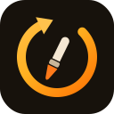
      <b>Krita AI Reloaded</b><span>FORK</span>
    </a>
    <nav class="nav" aria-label="Sections">
      <a href="#wildcards">Wildcards</a>
      <a href="#browsers">Browsers</a>
      <a href="#prompt-ai">Prompt AI</a>
      <a href="#history">History</a>
      <a href="#clips">Clips</a>
      <a href="#gallery">Gallery</a>
      <a href="#everything">All features</a>
      <a href="#install">Install</a>
      <a href="#faq">FAQ</a>
    </nav>
    <div class="spacer"></div>
    <a class="btn btn-ring btn-support" href="https://ko-fi.com/fatguy84" aria-label="Support on Ko-fi"><svg class="heart" aria-hidden="true"><use href="#heart"/></svg><span>Support</span></a>
    <a class="btn btn-amber" href="https://github.com/FatGuy84/krita-ai-reloaded/releases/latest">Download</a>
  </div>
</header>

<main id="top">
  <section class="hero">
    <div class="banner scope-dark">
      <div class="tiles" aria-hidden="true">
        
        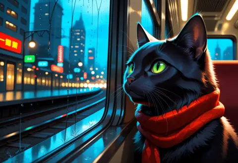
        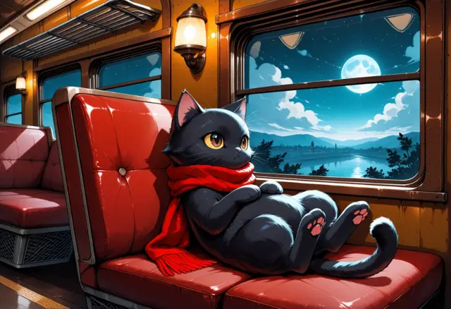
        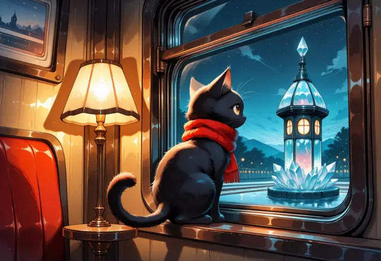
        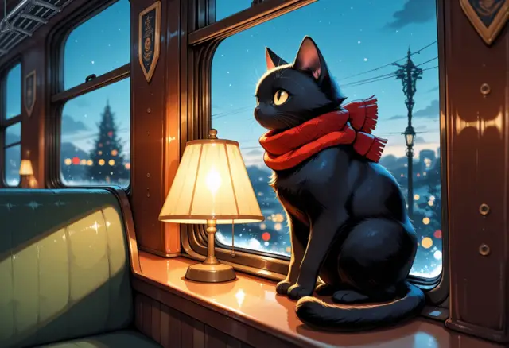
        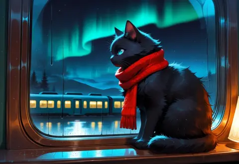
        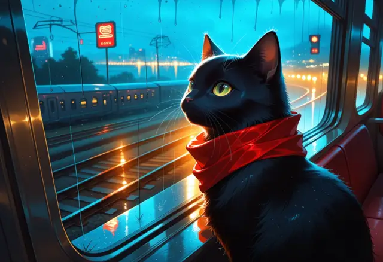
        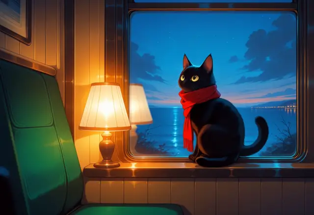
        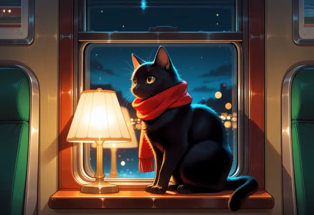
        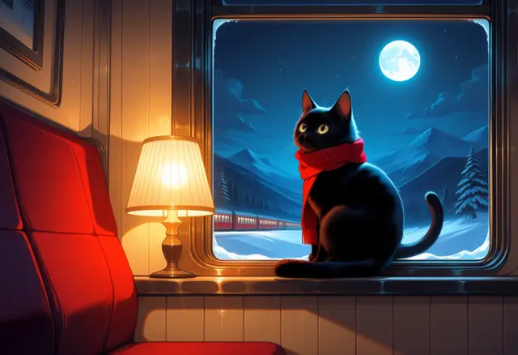
        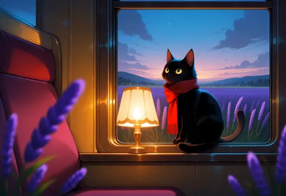
        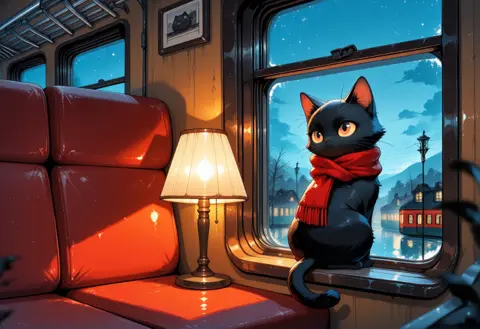
        
        
        
        
        
        
        
        
        
        
        
        
      </div>
      <div class="wrap banner-body">
        <div class="lockup">
          <svg class="banner-mark" viewBox="0 0 128 128" aria-hidden="true">
            <defs><linearGradient id="kar-ring" x1="20" y1="14" x2="108" y2="114" gradientUnits="userSpaceOnUse"><stop offset="0" stop-color="#FFC24D"/><stop offset="0.45" stop-color="#FFB020"/><stop offset="1" stop-color="#FF6A00"/></linearGradient></defs>
            <path d="M92.28 35.72 A40 40 0 1 1 47.10 27.75" fill="none" stroke="url(#kar-ring)" stroke-width="10" stroke-linecap="round"/>
            <path d="M59.6 22.4 L49.2 38.5 L40.2 19.3 Z" fill="#FFC24D"/>
            <g transform="translate(64 65) rotate(26) scale(0.85)"><path d="M-5.5 -24.5 a5.5 5.5 0 0 1 11 0 L5.5 3 L-5.5 3 Z" fill="#F4E7D3"/><rect x="-7" y="4.6" width="14" height="6.8" rx="2" fill="#C9B79B"/><path d="M-7 13 L7 13 L2.2 30 Q0 34 -2.2 30 Z" fill="#FF7A1A"/></g>
          </svg>
          <div>
            <h1>Krita AI Reloaded</h1>
            <p class="tagline">Generate faster. Browse visually. Run it again.</p>
            <p class="over">A usability fork of Krita AI Diffusion</p>
          </div>
        </div>
        <div class="hero-cta">
          <a class="btn btn-amber btn-lg" href="https://github.com/FatGuy84/krita-ai-reloaded/releases/latest">
            <svg viewBox="0 0 24 24" fill="none" stroke="currentColor" stroke-width="2" stroke-linecap="round" stroke-linejoin="round" aria-hidden="true"><path d="M12 3v12"/><path d="m7 10 5 5 5-5"/><path d="M5 21h14"/></svg>
            Download the plugin
          </a>
          <a class="btn" href="https://github.com/FatGuy84/krita-ai-reloaded">
            <svg viewBox="0 0 24 24" fill="none" stroke="currentColor" stroke-width="2" stroke-linecap="round" stroke-linejoin="round" aria-hidden="true"><path d="m8 6-6 6 6 6"/><path d="m16 6 6 6-6 6"/></svg>
            Source on GitHub
          </a>
          <p class="meta"><b data-release="tag">v1.53.0-reloaded.4</b>, released <span data-release="date">7 October 2026</span><br>Free and open source, GPL-3.0. Windows, macOS and Linux, wherever Krita runs.</p>
        </div>
      </div>
    </div>
  </section>

  <div class="ticker scope-dark">
    <ul>
      <li>Sequential wildcards</li><li>XY grid</li><li>Loop Generate</li><li>Strength Sweep</li><li>LoRA Browser</li><li>LoRA strength sliders</li><li>CivitAI downloads</li><li>AnimaDex</li><li>Prompt AI on Ollama</li><li>AI Select</li><li>DLSS5 Enhance</li><li>Searchable history</li><li>1–5 star ratings</li><li>Create Grid</li><li>Save to Eagle</li>
    </ul>
    <ul aria-hidden="true">
      <li>Sequential wildcards</li><li>XY grid</li><li>Loop Generate</li><li>Strength Sweep</li><li>LoRA Browser</li><li>LoRA strength sliders</li><li>CivitAI downloads</li><li>AnimaDex</li><li>Prompt AI on Ollama</li><li>AI Select</li><li>DLSS5 Enhance</li><li>Searchable history</li><li>1–5 star ratings</li><li>Create Grid</li><li>Save to Eagle</li>
    </ul>
  </div>

  <section class="demo scope-dark" id="try" aria-labelledby="try-h">
    <div class="wrap">
      <div class="demo-head">
        <p class="overline">Try it here</p>
        <h2 id="try-h">The plugin you already paint with.</h2>
        <p>With the clicks taken out of <span class="hl">prompting</span>, <span class="hl">LoRA management</span> and <span class="hl">batch generation</span>.</p>
        <ol class="steps-inline">
          <li><b>1</b>Edit the prompt</li>
          <li><b>2</b>Press a×b</li>
          <li><b>3</b>Generate</li>
        </ol>
      </div>

      <div class="stage" role="group" aria-label="Interactive demo of sequential wildcards">
        <div class="docker">
          <div class="dock-title"><span>AI Image Generation</span><span class="dots" aria-hidden="true"><i></i><i></i></span></div>
          <div class="dock-body">
            <div class="row">
              <span class="chip style"><span class="sw" aria-hidden="true"></span>Illustrious XL · Cinematic</span>
              <span class="chip">1024 × 1024</span>
            </div>
            <div class="tools" role="toolbar" aria-label="Prompt toolbar">
              <button type="button" data-insert="<lora:film_grain:0.6>">LoRA</button>
              <button type="button" data-insert="__hairstyles__">Wildcards</button>
              <button type="button" data-insert="[[dawn|noon|dusk]]">[[a|b]]</button>
              <button type="button" id="ai-btn">AI ▾</button>
            </div>
            <label for="prompt" class="overline">Prompt</label>
            <textarea id="prompt" spellcheck="false">[[black|white]] cat, [[sitting|jumping]], on a windowsill, soft morning light</textarea>
            <div class="neg">blurry, lowres, watermark</div>
            <div class="batch">
              <label for="count">Batch</label>
              <input id="count" type="number" min="1" max="1000" value="4">
              <button type="button" class="icon-btn" id="fit" title="Set batch count to the number of combinations" aria-label="Set batch count to the number of combinations">a×b</button>
              <span class="muted" style="margin-left:auto">up to 1000</span>
            </div>
            <div class="gen-row">
              <button type="button" class="btn btn-amber" id="generate">Generate ×4</button>
              <button type="button" class="icon-btn" id="loop" aria-pressed="false" title="Loop Generate" aria-label="Loop Generate">
                <svg viewBox="0 0 24 24" fill="none" stroke="currentColor" stroke-width="2" stroke-linecap="round" stroke-linejoin="round" aria-hidden="true"><path d="M20 12a8 8 0 1 1-2.34-5.66"/><path d="M20 4v5h-5"/></svg>
              </button>
              <button type="button" class="icon-btn" id="pause" aria-pressed="false" title="Pause queue" aria-label="Pause queue">
                <svg viewBox="0 0 24 24" fill="none" stroke="currentColor" stroke-width="2" stroke-linecap="round" aria-hidden="true"><path d="M9 5v14"/><path d="M15 5v14"/></svg>
              </button>
            </div>
            <div class="progress" aria-hidden="true"><i id="bar"></i></div>
            <p class="status" id="status" aria-live="polite">Ready.</p>
          </div>
        </div>
        <div class="items">
          <div class="items-head">
            <p class="overline">Batch items, as the plugin evaluates them</p>
            <p class="formula" id="formula"></p>
          </div>
          <ol class="list" id="list"></ol>
          <div class="presets">
            <span class="muted">Try:</span>
            <button type="button" data-preset="[[black|white]] cat, [[sitting|jumping]], on a windowsill, soft morning light">two groups</button>
            <button type="button" data-preset="portrait of a knight, [[<lora:ink_wash:0.8> ink wash|<lora:oil_paint:0.7> oil painting|flat color]], three-quarter view">LoRA per item</button>
            <button type="button" data-preset="a lighthouse on a cliff at [[dawn|noon|dusk|night]], [[calm|stormy]] sea, wide shot">4 × 2</button>
            <button type="button" data-preset="a red fox in the snow, {sleeping|running|watching}">random only</button>
          </div>
        </div>
      </div>
      <p class="caption">Edit the prompt. Each <code>[[a|b|c]]</code> group cycles through its options across the batch, and several groups multiply into every combination. The <b>a×b</b> button sets the batch count for you. Upstream only has random <code>{a|b|c}</code>.</p>
    </div>
  </section>

  <section class="band" id="glance">
    <div class="wrap">
      <div class="glance-top">
        <div class="sec-head">
          <p class="overline">At a glance</p>
          <h2>Everything upstream does, plus the parts that took too many clicks.</h2>
          <p>This fork adds UX and power-user features on top of Acly's plugin and leaves the inference core alone. Your styles, servers and workflows keep working.</p>
        </div>
        <figure class="media portrait">
          <video src="media/motion-hero.mp4" poster="media/motion-hero.webp" width="720" height="1280" muted loop playsinline controls preload="none" aria-label="Animation: a pencil sketch of a cat draws itself, then six generated results of the same cat in different places replace it one by one and land in the history"></video>
          <figcaption>A pencil sketch, then the same cat in six places.</figcaption>
        </figure>
      </div>
      <div class="glance">
        <div>
          <h3>Browse</h3>
          <ul>
            <li>LoRA, Recipe, Style, Checkpoint and Wildcard pickers with live search, previews and favorites</li>
            <li>LoRA strength sliders for every LoRA in the prompt, trigger words kept with their LoRA</li>
            <li>CivitAI and AnimaDex browsers: search and download without leaving Krita</li>
          </ul>
        </div>
        <div>
          <h3>Batch</h3>
          <ul>
            <li>Sequential <code>[[a|b]]</code> wildcards and Cartesian batches, up to 1000 per run</li>
            <li>XY grid: every combination as one labelled grid, same seed</li>
            <li>Loop Generate, Strength Sweep, Pause queue, live preview, Cancel current</li>
            <li>Local prompt tools through Ollama</li>
          </ul>
        </div>
        <div>
          <h3>Organize</h3>
          <ul>
            <li>History with search, favorites, 1–5 star ratings and filters</li>
            <li>Create Grid from any batch, saved to a grid folder</li>
            <li>Save to Eagle, copy image to clipboard</li>
            <li>Faster startup through disk-cached model lists</li>
          </ul>
        </div>
      </div>
      <dl class="stats">
        <div><dt><span data-count="1000">1000</span></dt><dd>images in one batch run</dd></div>
        <div><dt><span data-count="7">7</span></dt><dd>visual browsers and pickers</dd></div>
        <div><dt><span data-count="4">4</span></dt><dd>prompt actions per history entry</dd></div>
        <div><dt>0</dt><dd>cloud accounts needed for Prompt AI</dd></div>
      </dl>
    </div>
  </section>

  <section class="band alt" id="wildcards">
    <div class="wrap">
      <div class="sec-head">
        <p class="overline">Sequential wildcards and batch control</p>
        <h2>Run through a fixed set of variations instead of hoping the dice land right.</h2>
      </div>
      <figure class="media wide">
        <video src="media/motion-grid.mp4" poster="media/motion-grid.webp" width="1280" height="720" muted loop playsinline controls preload="none" aria-label="Animation: the prompt black cat, [[lavender fields|snowy mountains]], [[sunset|full moon]] types itself, its options become the rows and columns of a two by two grid, and the four results fill it: 2 × 2 = batch 4"></video>
        <figcaption>Two groups of two options make four images, every combination in order.</figcaption>
      </figure>
      <div class="split">
        <div class="copy">
          <dl class="syntax">
            <dt>[[a|b|c]]</dt><dd>Item 1 gets <code>a</code>, item 2 gets <code>b</code>, item 3 gets <code>c</code>, item 4 wraps back to <code>a</code>.</dd>
            <dt>[[a|b]] … [[x|y]]</dt><dd>Several groups combine into every pairing across the batch.</dd>
            <dt>__name__</dt><dd>A random line from <code>wildcards/name.txt</code>, re-read every time you generate.</dd>
            <dt>{a|b|c}</dt><dd>Upstream's random pick, still there.</dd>
          </dl>
          <p><strong>LoRA tags switch per item.</strong> Put <code>&lt;lora:name:0.8&gt;</code> inside a group and each image in the batch gets its own LoRA set. Upstream would apply whatever the first evaluation picked to all of them.</p>
          <div class="controls">
            <div class="ctl"><b><span class="g" aria-hidden="true">#</span>XY grid</b><span>Runs every combination once and opens the results as one labelled grid at full resolution: the first group across, the rest down. Same seed in every cell.</span></div>
            <div class="ctl"><b><span class="g" aria-hidden="true">▦</span>Create Grid</b><span>Right-click a batch in the history to lay it out afterwards, each cell labelled with what sets it apart.</span></div>
            <div class="ctl"><b><span class="g" aria-hidden="true">↻</span>Loop Generate</b><span>Enqueues another batch every time the queue empties, until you turn it off. Turns itself off if a generation fails.</span></div>
            <div class="ctl"><b><span class="g" aria-hidden="true">⇅</span>Strength Sweep</b><span>One image per strength value, for example 40% to 75% in steps of 5, with a fixed seed so strength is the only difference.</span></div>
            <div class="ctl"><b><span class="g" aria-hidden="true">II</span>Pause queue</b><span>The running image finishes, queued batches wait until you click again.</span></div>
            <div class="ctl"><b><span class="g" aria-hidden="true">GB</span>Unload Models</b><span>Frees VRAM on the ComfyUI server, with a live bar of current GPU use.</span></div>
          </div>
        </div>
        <figure class="media">
          <video src="media/demo-wildcards.mp4" poster="media/demo-wildcards.webp" width="846" height="1000" muted loop playsinline controls preload="none" aria-label="Krita docker: two sequential wildcard groups in the prompt, the a×b button setting the batch count to 4, and the four results arriving in the history"></video>
          <figcaption>Two groups, a×b sets the batch to 4, one image per combination. Recorded in Krita.</figcaption>
        </figure>
      </div>
      <div class="split flip">
        <div class="copy">
          <h3>Leave it running overnight.</h3>
          <p>The circular-arrow button next to Generate starts a batch at once and queues the next one whenever the queue runs dry. Combined with a sequential group it sweeps a whole wildcard file, then starts over with new seeds.</p>
          <p>Previews of the sampler's intermediate steps show on the canvas while it works, and are replaced by the real result when the job finishes.</p>
        </div>
        <figure class="media">
          <video src="media/demo-loop-generate.mp4" poster="media/demo-loop-generate.webp" width="1280" height="810" muted loop playsinline controls preload="none" aria-label="Loop Generate running: a new image of the night train appears on the canvas every few seconds while the history fills up"></video>
          <figcaption>Loop Generate keeps enqueuing batches until you toggle it off.</figcaption>
        </figure>
      </div>
    </div>
  </section>

  <section class="band" id="browsers">
    <div class="wrap">
      <div class="sec-head">
        <p class="overline">Browsers</p>
        <h2>Pick LoRAs by looking at them, not by remembering file names.</h2>
        <p>Every list that used to be a long dropdown is now a searchable, non-modal picker with previews. They stay open beside the canvas while you work.</p>
      </div>
      <div class="split">
        <div class="copy">
          <h3>LoRA Browser</h3>
          <p>Thumbnails load as you scroll, so hundreds of LoRAs open without a stall, video previews included. Filter by tag and base model, sort by name or date added, and insert trigger words with one click.</p>
          <p>Favorites sync both ways with <strong>ComfyUI-Lora-Manager</strong>. A small badge in each thumbnail tells you whether CivitAI's license allows commercial use of the images you make with it.</p>
          <p>Select several and insert them as one <code>[[…]]</code> group to compare them in a single batch.</p>
          <p><strong>Strength sliders.</strong> The arrow on the LoRA button lists every LoRA in the prompt with a slider. Trigger words stay in a block with their LoRA, so removing one takes both, and Enhance Prompt leaves them alone.</p>
        </div>
        <figure class="media">
          <video src="media/demo-lora-browser.mp4" poster="media/demo-lora-browser.webp" width="1280" height="696" muted loop playsinline controls preload="none" aria-label="LoRA browser: three LoRAs picked across different searches, added to the prompt as one sequential group, then one image generated per LoRA"></video>
          <figcaption>Pick across searches, add as one sequential group, get one image per LoRA.</figcaption>
        </figure>
      </div>
      <div class="browsers">
        <div class="br"><span class="tag">Recipe</span><h3>Recipe Browser</h3><p>Lora Manager's saved prompt and LoRA stacks. Add to the prompt or replace it, with missing LoRAs flagged.</p><p class="needs">Needs ComfyUI-Lora-Manager</p></div>
        <div class="br"><span class="tag">Style</span><h3>Style Picker</h3><p>Hundreds of presets with live search and a base-model filter. Create styles straight from your checkpoints.</p><p class="needs">Built in</p></div>
        <div class="br"><span class="tag">__name__</span><h3>Wildcards</h3><p>Browse, edit and create wildcard files. Insert as a live reference, a random group or a sequential group.</p><p class="needs">Built in. Drop in sd-wildcards as is.</p></div>
        <div class="br"><span class="tag">CivitAI</span><h3>CivitAI Browser</h3><p>Search civitai.com from the LoRA browser or the style dialog, pre-filtered to your current base model, and download into your library.</p><p class="needs">Downloads through Lora Manager</p></div>
        <div class="br"><span class="tag">Anima</span><h3>AnimaDex</h3><p>About 36,000 characters and artists the Anima model knows, each with a sample and the trigger that reproduces it.</p><p class="needs">Live API or offline catalog</p></div>
        <div class="br"><span class="tag">Model</span><h3>Checkpoint picker</h3><p>Every checkpoint on your server, searchable, with previews. Scan Server re-reads the file lists in seconds.</p><p class="needs">Built in</p></div>
      </div>
    </div>
  </section>

  <section class="band alt" id="prompt-ai">
    <div class="wrap">
      <div class="sec-head">
        <p class="overline">Prompt AI</p>
        <h2>A local language model rewrites the prompt. Nothing leaves your network.</h2>
        <p>The AI button next to the prompt talks to <a href="https://ollama.com">Ollama</a> on your own machine. It writes tag lists for SD 1.5, SD XL, Illustrious, Pony and Anima, and natural language for Flux, Qwen, Z-Image and Krea 2.</p>
      </div>
      <div class="split">
        <div class="copy">
          <p><strong>Your syntax is safe.</strong> LoRA tags, <code>__name__</code> references and <code>{a|b}</code> or <code>[[a|b]]</code> groups are taken out before the prompt goes to the model and put back afterwards, so it cannot mangle or drop them.</p>
          <p><strong>Prompt Batch</strong> builds a pool of different prompts before you generate, either varying the current one or inventing scenes for a theme, and writes them as one sequential group or a wildcard file.</p>
          <p><strong>Shares the GPU politely.</strong> Free Image Model First unloads the diffusion models before each call, and the language model is dropped again right after, so image generation gets its VRAM back.</p>
        </div>
        <div class="menu" role="group" aria-label="Prompt AI menu">
          <div class="menu-head"><span class="ai">AI</span>Prompt AI · your Ollama model on 127.0.0.1:11434</div>
          <ul>
            <li><b>Enhance</b><span>Improve the whole prompt, or only the selected text</span></li>
            <li><b>Add detail only</b><span>Keeps your wording and adds to it</span></li>
            <li><b>Rewrite from scratch</b><span>A new prompt for the same subject</span></li>
            <li><b>Split into sections</b><span><code># Character</code>, <code># Lighting</code>, <code># Camera</code> and the rest, nothing dropped</span></li>
            <li><b>Variations as sequential wildcard</b><span>Several alternatives as one <code>[[a|b|c]]</code> group</span></li>
            <li><b>Describe the image</b><span>Captions the canvas or the selection, with a vision model</span></li>
            <li><b>Modify with instruction…</b><span>"Make it night, remove the hat", with exclusions moved to the negative prompt</span></li>
            <li class="sep"><b>Prompt batch for generation…</b><span>A pool of prompts for a batch or Loop Generate</span></li>
            <li><b>Revert</b><span>Steps back through earlier versions</span></li>
          </ul>
        </div>
      </div>
    </div>
  </section>

  <section class="band" id="history">
    <div class="wrap">
      <div class="sec-head">
        <p class="overline">History and export</p>
        <h2>Find the good one from last Tuesday.</h2>
        <p>The history panel keeps every result with its prompt, and now you can search it, rate it and filter it.</p>
      </div>
      <div class="split">
        <div class="copy">
          <p><strong>Batches stay together.</strong> Results from one Generate click are grouped under one header, even when wildcards gave each image a different prompt. Click the header to select the whole batch.</p>
          <p><strong>Favorites and 1–5 stars</strong>, with filters by rating and by prompt text.</p>
          <p><strong>Four prompt actions instead of one.</strong> Apply or copy, the raw or the evaluated prompt. Copy Image puts the full-resolution result on the clipboard.</p>
          <p><strong>Save to Eagle</strong> sends results to your Eagle library.</p>
          <p>Every history action has a keyboard shortcut, shown next to it in the context menu.</p>
        </div>
        <figure class="media">
          <video src="media/demo-history.mp4" poster="media/demo-history.webp" width="1280" height="810" muted loop playsinline controls preload="none" aria-label="History panel: searching the prompts, rating results with the keyboard and filtering by favorites and rating"></video>
          <figcaption>Search, rate with the number keys, filter by favorites and stars.</figcaption>
        </figure>
      </div>
    </div>
  </section>

  <section class="band alt" id="clips">
    <div class="wrap">
      <div class="sec-head">
        <p class="overline">Short clips</p>
        <h2>New since the last tour, recorded in Krita.</h2>
        <p>Each clip is cut from the same night-train session as the video. Nothing is mocked up.</p>
      </div>
      <div class="tour" data-youtube="RjvoxIelwmA">
        <div class="tour-frame">
          <button type="button" class="tour-play" aria-label="Play the full tour, 8 minutes, from YouTube">
            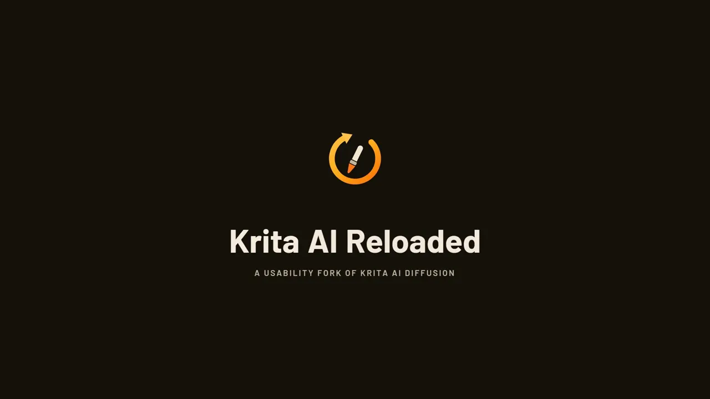
            <span class="disc" aria-hidden="true"><svg viewBox="0 0 24 24" fill="currentColor"><path d="M7 4v16l13-8z"/></svg></span>
          </button>
        </div>
        <div class="tour-copy">
          <p class="overline">Full tour · 8 min · narrated</p>
          <h3>From a pencil sketch to a rated favorite.</h3>
          <ol class="chapters" aria-label="Chapters">
            <li>Pick a look</li>
            <li>Write prompts that vary</li>
            <li>Let your local model help</li>
            <li>Find the right LoRA</li>
            <li>Scale it up</li>
            <li>Keep the best</li>
          </ol>
          <p class="fine">Plays from YouTube. Nothing loads from YouTube until you click play.</p>
        </div>
      </div>
      <div class="clips">
        <figure class="media">
          <video src="media/demo-xy-grid.mp4" poster="media/demo-xy-grid.webp" width="1280" height="720" muted loop playsinline controls preload="none" aria-label="XY grid ticked in the queue popup, four cells forming in the live preview, then a two by two grid labelled lavender fields, snowy mountains, sunset and full moon"></video>
          <h3>XY grid</h3>
          <p>Two wildcard groups, one tick, one labelled grid in its own document.</p>
        </figure>
        <figure class="media">
          <video src="media/demo-create-grid.mp4" poster="media/demo-create-grid.webp" width="1280" height="720" muted loop playsinline controls preload="none" aria-label="History search for the loop batches, right-click on a batch header, Create Grid, and the batch opens as a labelled grid"></video>
          <h3>Create Grid</h3>
          <p>A night of Loop Generate, laid out from the history with one right-click.</p>
        </figure>
        <figure class="media">
          <video src="media/demo-lora-strength.mp4" poster="media/demo-lora-strength.webp" width="1280" height="720" muted loop playsinline controls preload="none" aria-label="The LoRA popup with a slider for the pixel art LoRA, moved from 0.30 to 0.90, then the same seed rendered again in full pixel art"></video>
          <h3>LoRA strength slider</h3>
          <p>Slide the pixel-art LoRA from 0.30 to 0.90; the number in the prompt follows.</p>
        </figure>
        <figure class="media">
          <video src="media/demo-ai-select.mp4" poster="media/demo-ai-select.webp" width="1280" height="720" muted loop playsinline controls preload="none" aria-label="Select by Text with the word sky, marching ants around the sky, and a new aurora sky painted into just that selection"></video>
          <h3>AI Select</h3>
          <p>Type sky, get the selection, repaint only that part.</p>
        </figure>
        <figure class="media">
          <video src="media/demo-strength-sweep.mp4" poster="media/demo-strength-sweep.webp" width="1280" height="720" muted loop playsinline controls preload="none" aria-label="Strength Sweep dialog set from 30 to 80 percent in steps of 10, then the six results stepped through on the canvas"></video>
          <h3>Strength Sweep</h3>
          <p>One image per strength, same seed, 30 to 80 percent.</p>
        </figure>
        <figure class="media">
          <video src="media/demo-preview-cancel.mp4" poster="media/demo-preview-cancel.webp" width="1280" height="720" muted loop playsinline controls preload="none" aria-label="Live preview showing an image form on the canvas, a second cat appears in the window, Cancel skips it and the next image renders"></video>
          <h3>Live preview and Cancel</h3>
          <p>Watch each image form. Skip the miss, the queue goes on.</p>
        </figure>
      </div>
      <figure class="media wide">
        <video src="media/motion-dlss.mp4" poster="media/motion-dlss.webp" width="1280" height="720" muted loop playsinline controls preload="none" aria-label="Animation: DLSS5 Enhance runs for four seconds on a selection around the cat, then a divider sweeps across to compare before and after, and the view zooms in on the fur and eyes"></video>
        <h3>DLSS5 Enhance Selection</h3>
        <p>The same test frame before and after, Natural look, animated as a side-by-side sweep.</p>
      </figure>
    </div>
  </section>

  <section class="band" id="gallery">
    <div class="wrap">
      <div class="sec-head">
        <p class="overline">Gallery</p>
        <h2>One cat, one red scarf, a whole night of trains.</h2>
        <p>Results from the tour, shown as generated. Each caption names the feature that made it.</p>
      </div>
      <div class="gallery">
        <figure>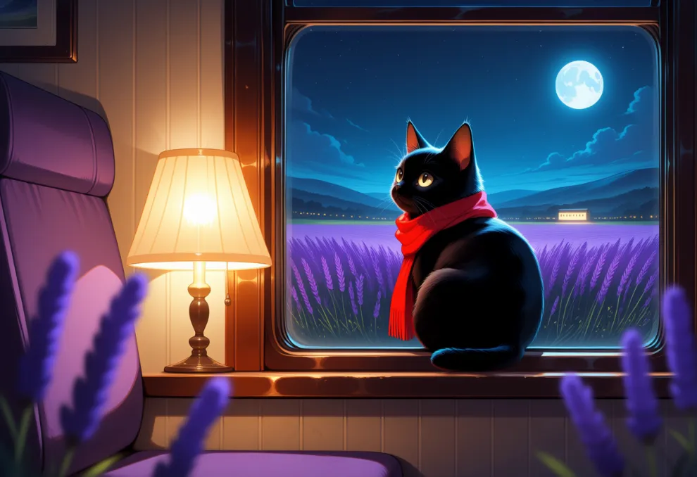<figcaption><code>[[lavender fields|snowy mountains]], [[sunset|full moon]]</code>: lavender fields, full moon</figcaption></figure>
        <figure>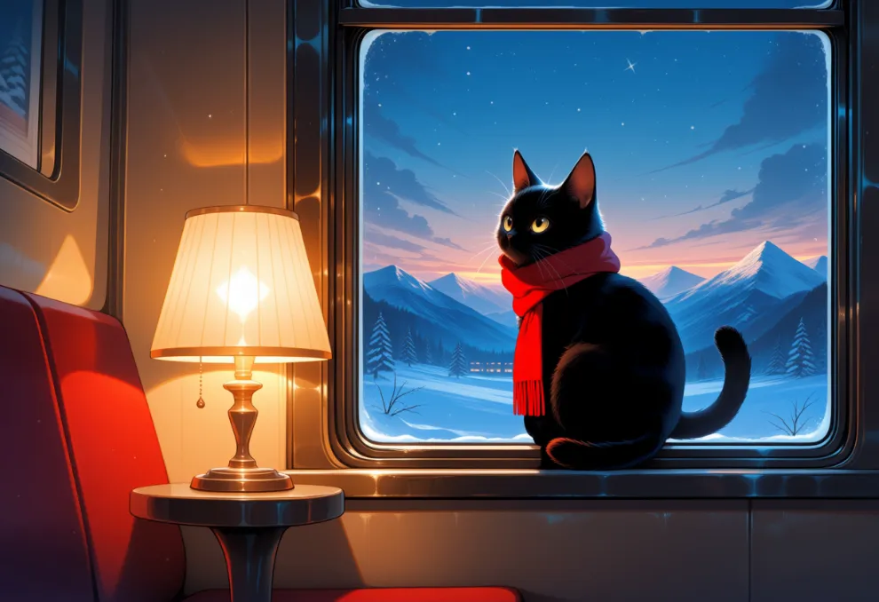<figcaption>Same batch: snowy mountains, sunset</figcaption></figure>
        <figure>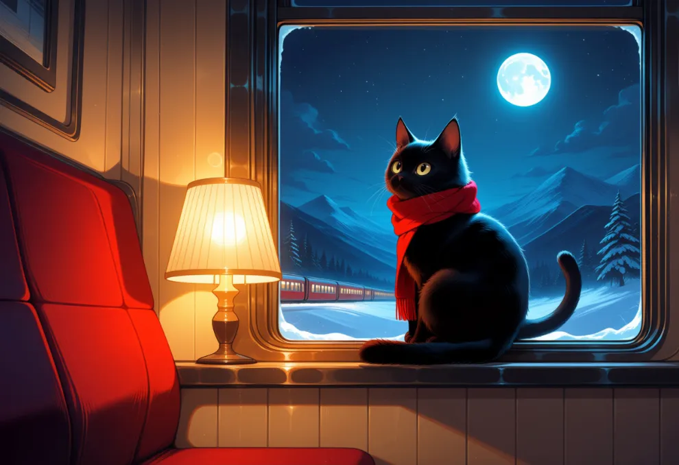<figcaption>Same batch: snowy mountains, full moon</figcaption></figure>
        <figure>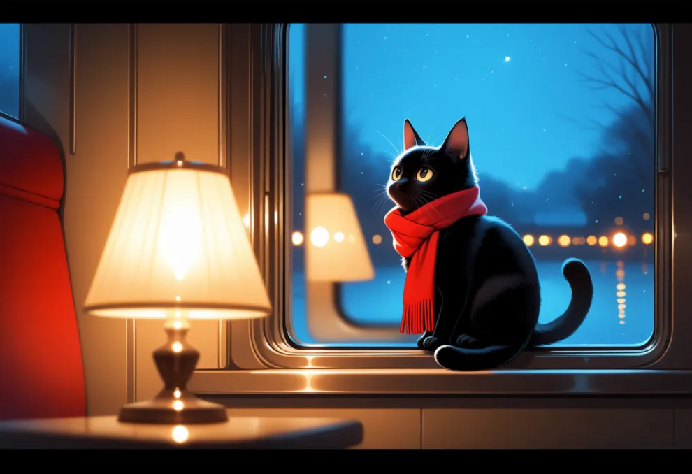<figcaption>From a pencil sketch, through a Scribble control layer</figcaption></figure>
        <figure>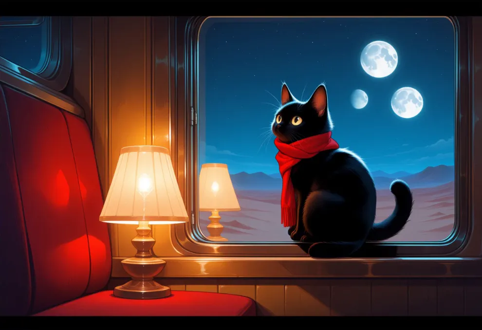<figcaption><code>__outside__</code> wildcard: a desert with two moons</figcaption></figure>
        <figure>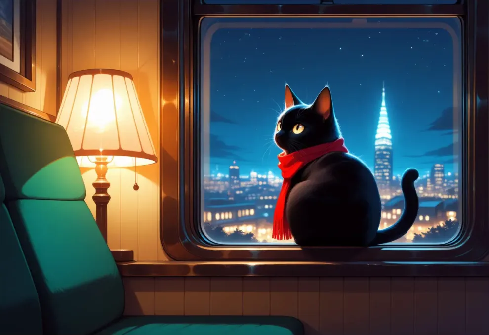<figcaption>After Enhance: the local model rewrote the prompt</figcaption></figure>
        <figure>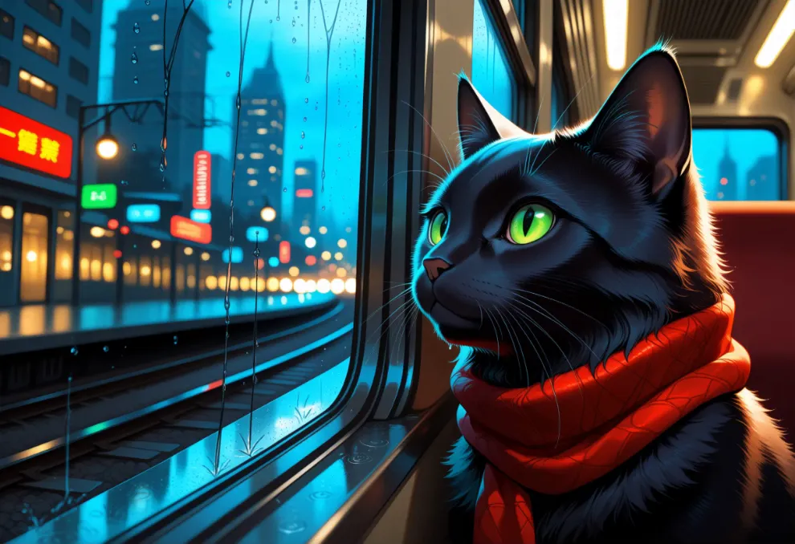<figcaption>Variations, one of a batch of four</figcaption></figure>
        <figure><figcaption>Watercolor LoRA, picked in the LoRA Browser</figcaption></figure>
        <figure>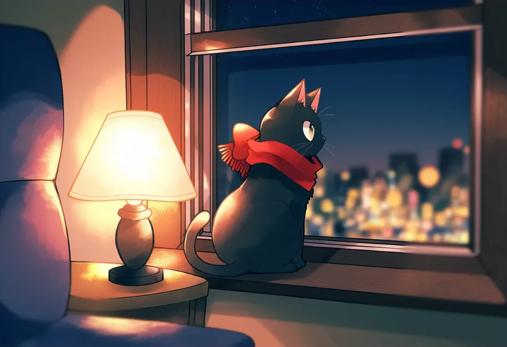<figcaption>An artist tag found in AnimaDex</figcaption></figure>
        <figure>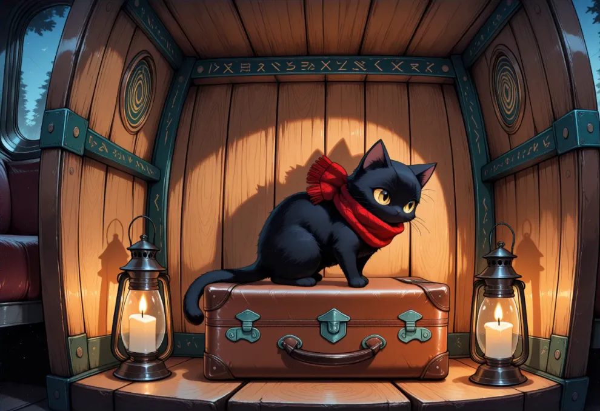<figcaption>Prompt batch, one of 18 from three Loop Generate rounds</figcaption></figure>
        <figure>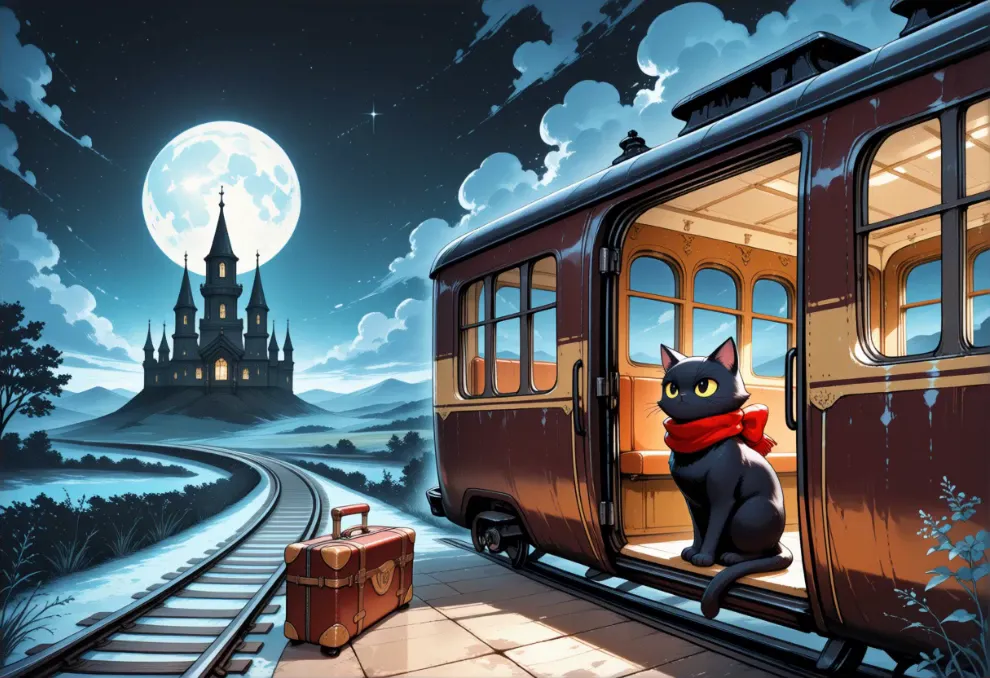<figcaption>Found again by searching the history for "spires"</figcaption></figure>
        <figure>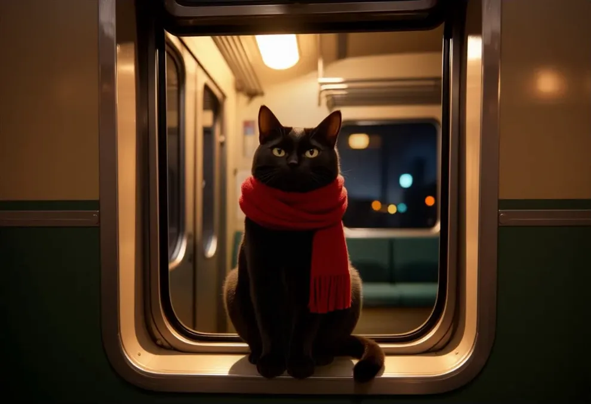<figcaption>DLSS5 Enhance Selection on fur and face</figcaption></figure>
      </div>
    </div>
  </section>

  <section class="wall-band scope-dark" id="everything" aria-labelledby="everything-h">
    <div class="wrap">
      <div class="sec-head">
        <p class="overline">Also in the box</p>
        <h2 id="everything-h">78 features in one plugin.</h2>
      </div>
      <ul class="wall">
          <li class="hot" style="--d:1.11s">Style picker</li>
          <li class="hot" style="--d:0.00s">Generate across styles</li>
          <li class="hot" style="--d:2.24s">CivitAI browser</li>
          <li style="--d:0.90s">Batch download</li>
          <li style="--d:1.13s">Commercial-use badge</li>
          <li class="hot" style="--d:1.75s">Control layers</li>
          <li class="hot" style="--d:0.81s">Sequential [[a|b]]</li>
          <li style="--d:1.40s">Cartesian batches</li>
          <li style="--d:0.47s">a×b batch count</li>
          <li style="--d:2.04s">Batch count up to 1000</li>
          <li class="hot" style="--d:0.70s">File wildcards</li>
          <li style="--d:1.69s">Wildcard editor</li>
          <li class="hot" style="--d:0.93s">Wildcard generator</li>
          <li style="--d:0.87s">@Name references</li>
          <li style="--d:1.80s">Layer references</li>
          <li class="hot" style="--d:1.37s">Enhance prompt</li>
          <li style="--d:0.58s">Add detail only</li>
          <li style="--d:1.28s">Rewrite from scratch</li>
          <li class="hot" style="--d:0.29s">Modify with instruction</li>
          <li style="--d:0.38s">Exclusions to negative</li>
          <li class="hot" style="--d:0.84s">Describe image</li>
          <li style="--d:0.61s">Describe selection</li>
          <li class="hot" style="--d:1.77s">Split into sections</li>
          <li class="hot" style="--d:0.96s">Variations</li>
          <li class="hot" style="--d:1.22s">Prompt batch</li>
          <li style="--d:0.03s">Prompt revert</li>
          <li style="--d:1.48s">Per-model prompt profiles</li>
          <li class="hot" style="--d:1.25s">LoRA browser</li>
          <li style="--d:0.64s">Lora Manager sync</li>
          <li style="--d:0.49s">Trigger words</li>
          <li style="--d:1.31s">Content filter</li>
          <li style="--d:0.67s">Insert position</li>
          <li class="hot" style="--d:2.07s">Recipe browser</li>
          <li class="hot" style="--d:2.15s">AnimaDex browser</li>
          <li style="--d:1.89s">Save as wildcard</li>
          <li class="hot" style="--d:2.21s">Strength sweep</li>
          <li class="hot" style="--d:1.57s">Loop Generate</li>
          <li class="hot" style="--d:0.99s">Live preview</li>
          <li class="hot" style="--d:2.12s">Cancel current</li>
          <li class="hot" style="--d:0.76s">Pause queue</li>
          <li class="hot" style="--d:0.52s">Unload models</li>
          <li style="--d:0.23s">VRAM meter</li>
          <li style="--d:1.72s">Status line</li>
          <li class="hot" style="--d:0.06s">AI Select</li>
          <li style="--d:1.83s">Select subject</li>
          <li style="--d:1.43s">Remove background</li>
          <li style="--d:0.73s">Model list cache</li>
          <li style="--d:2.18s">Scan server</li>
          <li style="--d:2.09s">Styles from checkpoints</li>
          <li style="--d:1.66s">Checkpoint thumbnails</li>
          <li style="--d:1.08s">Base-model filter</li>
          <li style="--d:1.63s">Batch grouping</li>
          <li class="hot" style="--d:1.16s">History search</li>
          <li class="hot" style="--d:0.41s">Favorites</li>
          <li class="hot" style="--d:2.01s">1–5 star ratings</li>
          <li class="hot" style="--d:1.05s">Rating filters</li>
          <li style="--d:1.51s">History shortcuts</li>
          <li style="--d:0.09s">Copy image to clipboard</li>
          <li style="--d:1.95s">Apply style / seed</li>
          <li style="--d:1.02s">Generation time</li>
          <li style="--d:0.15s">Mode in metadata</li>
          <li class="hot" style="--d:0.44s">Save to Eagle</li>
          <li class="hot" style="--d:1.92s">DLSS5 enhance</li>
          <li style="--d:1.54s">Tiled DLSS5</li>
          <li style="--d:1.60s">Krea 2 identity edit</li>
          <li style="--d:0.32s">MOSS-Image</li>
          <li class="hot" style="--d:0.12s">XY grid</li>
          <li class="hot" style="--d:0.79s">Create grid from history</li>
          <li style="--d:1.86s">Full-res comparison grids</li>
          <li style="--d:0.20s">Grid auto-save</li>
          <li class="hot" style="--d:1.34s">LoRA strength sliders</li>
          <li style="--d:0.35s">Trigger word blocks</li>
          <li style="--d:1.98s">Copy seed</li>
          <li style="--d:0.26s">Favorite style from result</li>
          <li style="--d:0.17s">Model name in layer names</li>
          <li style="--d:1.45s">Batch count on Generate</li>
          <li style="--d:0.55s">Multi-line [[a|b]] groups</li>
          <li style="--d:1.19s">Prompt comments kept</li>
      </ul>
      <p class="wall-legend"><i aria-hidden="true"></i>Outlined in amber and set bold: shown in the tour video.</p>
      <div class="more-msg">
        <b style="--d:2.58s">…and much more.</b>
        <span style="--d:2.98s; --d-line:3.38s">New features land all the time.</span>
      </div>
      <div class="works">
        <p class="overline">Works best with</p>
        <ul>
            <li style="--d:3.88s"><b>ComfyUI</b><span>the engine</span></li>
            <li style="--d:4.05s"><b>Lora Manager</b><span>LoRA library</span></li>
            <li style="--d:4.24s"><b>Ollama</b><span>local prompt AI</span></li>
            <li style="--d:4.42s"><b>Eagle</b><span>image archive</span></li>
            <li style="--d:4.59s"><b>NVIDIA RTX</b><span>for DLSS5</span></li>
            <li style="--d:4.78s"><b>CivitAI</b><span>models</span></li>
        </ul>
      </div>
    </div>
  </section>

  <aside class="support-strip" aria-label="Support the fork">
    <div class="wrap">
      <p><b>Made in spare time, free for everyone.</b> <span>If Loop Generate ran your batches overnight, a coffee keeps the next upstream merge coming.</span></p>
      <div class="btns">
        <a class="btn btn-amber" href="https://ko-fi.com/fatguy84"><svg class="heart" aria-hidden="true"><use href="#heart"/></svg>Buy a coffee on Ko-fi</a>
        <a class="btn btn-ring" href="https://github.com/sponsors/FatGuy84"><svg class="heart" aria-hidden="true"><use href="#heart"/></svg>GitHub Sponsors</a>
      </div>
    </div>
  </aside>

  <section class="band alt" id="install">
    <div class="wrap">
      <div class="sec-head">
        <p class="overline">Requirements and install</p>
        <h2>If upstream runs on your machine, this fork does too.</h2>
        <p>Same ComfyUI server, same hardware needs, same setup guide. The fork replaces the plugin folder and nothing else.</p>
      </div>
      <figure class="media wide">
        <video src="media/motion-pipeline.mp4" poster="media/motion-pipeline.webp" width="1280" height="720" muted loop playsinline controls preload="none" aria-label="Animation: Krita sends a prompt to a local Ollama model and gets an enhanced prompt back, then sends a batch of four to ComfyUI, and the four images travel back into the history"></video>
        <figcaption>How the pieces talk: Krita, a local Ollama model for prompts, and ComfyUI on your GPU.</figcaption>
      </figure>
      <div class="req">
        <div><span class="overline">Krita</span><b>5.2 or later</b><span>Windows, macOS or Linux.</span></div>
        <div><span class="overline">Backend</span><b>ComfyUI</b><span>Local, on your network, or the managed install from upstream's setup.</span></div>
        <div><span class="overline">Graphics card</span><b>As upstream</b><span>See upstream's hardware notes. Cloud generation works too.</span></div>
        <div><span class="overline">Already installed?</span><b>Settings carry over</b><span>Styles, servers and workflows stay where they are.</span></div>
      </div>
      <ol class="steps">
        <li><b>Set up the plugin once</b><p>Follow upstream's installation guide to get Krita and ComfyUI talking. Skip this if you already use Krita AI Diffusion.</p></li>
        <li><b>Import the plugin zip</b><p>From the latest release, download <code>krita_ai_reloaded-….zip</code> under Assets, not “Source code”. If upstream's plugin is installed, delete its <code>ai_diffusion</code> folder in <code>pykrita</code> first. Then in Krita: Tools › Scripts › Import Python Plugin from File, and pick the zip.</p><span class="path">Windows: %APPDATA%\krita\pykrita</span><span class="path">macOS: ~/Library/Application Support/krita/pykrita</span><span class="path">Linux: ~/.local/share/krita/pykrita</span></li>
        <li><b>Restart Krita</b><p>The docker looks the same. The new buttons are next to the prompt, Generate and the batch count.</p></li>
      </ol>
      <div class="optional">
        <table>
          <thead><tr><th>Optional add-on</th><th>What it unlocks</th></tr></thead>
          <tbody>
            <tr><td><a href="https://github.com/willmiao/ComfyUI-Lora-Manager">ComfyUI-Lora-Manager</a></td><td>Previews, tags, trigger words and favorites in the LoRA and Recipe browsers, CivitAI downloads. Without it the browser falls back to a plain file list.</td></tr>
            <tr><td><a href="https://ollama.com">Ollama</a></td><td>Prompt AI, Prompt Batch and generated wildcard files.</td></tr>
            <tr><td><a href="https://eagle.cool">Eagle</a></td><td>Save to Eagle from the history.</td></tr>
            <tr><td><a href="https://github.com/lbouaraba/comfyui-krea2edit">comfyui-krea2edit</a></td><td>Krea 2 Identity Edit, as a custom workflow and as an edit model.</td></tr>
            <tr><td><a href="https://github.com/Blueforcer/ComfyUI-DLSS5-Enhancer">ComfyUI-DLSS5-Enhancer</a></td><td>DLSS5 Enhance on results, canvas or selection, tiled for any size. Windows, RTX 30 or newer.</td></tr>
          </tbody>
        </table>
      </div>
    </div>
  </section>

  <section class="band" id="faq">
    <div class="wrap">
      <div class="sec-head">
        <p class="overline">Questions</p>
        <h2>Before you switch.</h2>
      </div>
      <div class="faq">
        <details><summary>How is this related to Krita AI Diffusion?</summary><div><p>It is a fork of Acly's plugin. All credit for the plugin itself goes to Acly and the upstream contributors. This fork layers usability features on top and tracks upstream releases, currently <span data-release="upstream">v1.53.0</span>.</p></div></details>
        <details><summary>Do I lose my styles and settings?</summary><div><p>No. The fork reads the same settings folder, styles and server configuration as upstream. You can switch back by putting the upstream folder in place again.</p></div></details>
        <details><summary>Does it change how images are generated?</summary><div><p>No. The inference core is upstream's. A plain prompt gives the same image with the same seed. The differences are in how prompts, batches and models are picked and organized.</p></div></details>
        <details><summary>Is it free?</summary><div><p>Yes. It is open source under GPL-3.0, like the original. Local generation costs nothing per image.</p></div></details>
        <details><summary>Does Prompt AI send my prompts anywhere?</summary><div><p>No. It only talks to the Ollama server you enter in the settings, by default <code>127.0.0.1:11434</code> on your own machine. It is off until you turn it on.</p></div></details>
        <details><summary>Do I need ComfyUI-Lora-Manager?</summary><div><p>Only for the richer browser features. Without it the LoRA browser shows a plain file list and everything else works.</p></div></details>
        <details><summary>How often is it updated?</summary><div><p>When upstream ships a release, it is merged into the fork and a new <code>-reloaded</code> release follows. Fork features land in between.</p></div></details>
        <details><summary>Where do I report a bug?</summary><div><p>Bugs in fork features go to the <a href="https://github.com/FatGuy84/krita-ai-reloaded/issues">fork's issue tracker</a>. If it also happens with the upstream plugin, report it upstream.</p></div></details>
      </div>
    </div>
  </section>

  <section class="band alt" id="support" aria-labelledby="support-h">
    <div class="wrap">
      <h2 class="visually-hidden" id="support-h">Download and support</h2>
      <div class="cta">
        <div>
          <p class="overline">Download</p>
          <h3>Get the latest release.</h3>
          <p><span data-release="tag">v1.53.0-reloaded.4</span>, based on upstream <span data-release="upstream">v1.53.0</span>. Import the plugin zip from the release assets and restart Krita.</p>
          <div class="btns">
            <a class="btn btn-amber btn-lg" href="https://github.com/FatGuy84/krita-ai-reloaded/releases/latest">Download</a>
            <a class="btn btn-lg" href="https://github.com/FatGuy84/krita-ai-reloaded#readme">Read the full README</a>
          </div>
        </div>
        <div class="give">
          <p class="overline">Keep it going</p>
          <h3>Kept going because people chip in.</h3>
          <p>The fork is made in one person's spare time. A tip pays for:</p>
          <ul>
            <li>Time to merge every upstream release into the fork</li>
            <li>Ports of new models and upstream pull requests</li>
            <li>New browsers and batch tools, and fixes for the ones you use</li>
          </ul>
          <div class="btns">
            <a class="btn btn-amber btn-lg" href="https://ko-fi.com/fatguy84"><svg class="heart" aria-hidden="true"><use href="#heart"/></svg>Support on Ko-fi</a>
            <a class="btn btn-ring btn-lg" href="https://github.com/sponsors/FatGuy84"><svg class="heart" aria-hidden="true"><use href="#heart"/></svg>GitHub Sponsors</a>
          </div>
          <p class="fine">Please consider <a href="https://github.com/sponsors/Acly">sponsoring Acly</a> too, who built the plugin this is based on.</p>
        </div>
      </div>
    </div>
  </section>
</main>

<footer>
  <div class="wrap">
    <span>Krita AI Reloaded is a fork of <a href="https://github.com/Acly/krita-ai-diffusion">Krita AI Diffusion</a> by Acly. GPL-3.0. Not affiliated with the Krita Foundation.</span>
    <nav aria-label="Footer">
      <a href="https://github.com/FatGuy84/krita-ai-reloaded">GitHub</a>
      <a href="https://github.com/FatGuy84/krita-ai-reloaded/releases">Releases</a>
      <a href="https://docs.interstice.cloud">Upstream docs</a>
      <a href="https://ko-fi.com/fatguy84">Ko-fi</a>
      <a href="https://github.com/sponsors/FatGuy84">GitHub Sponsors</a>
    </nav>
  </div>
</footer>

<script>
(function () {
  const prompt = document.getElementById("prompt");
  const count = document.getElementById("count");
  const fitBtn = document.getElementById("fit");
  const list = document.getElementById("list");
  const formula = document.getElementById("formula");
  const genBtn = document.getElementById("generate");
  const loopBtn = document.getElementById("loop");
  const pauseBtn = document.getElementById("pause");
  const bar = document.getElementById("bar");
  const status = document.getElementById("status");
  const presets = document.querySelectorAll("[data-preset]");
  const shown = 8, max = 1000;
  // runB is the batch size captured when a run starts; next is the gap between loop cycles
  let running = null, next = null, done = 0, cycle = 1, runB = 0, holding = false, touched = false;
  let rolls = {};  // random {a|b} picks, kept per item until the prompt changes or a new batch starts

  const pressed = b => b.getAttribute("aria-pressed") === "true";
  function groups(text) {
    const out = [];
    const re = /\[\[([\s\S]*?)\]\]/g;
    let m;
    while ((m = re.exec(text))) out.push({ start: m.index, end: re.lastIndex, opts: m[1].split("|").map(s => s.trim()) });
    return out;
  }
  function combos(gs) { return gs.reduce((n, g) => n * g.opts.length, 1); }
  function esc(s) { return s.replace(/[&<>"]/g, c => ({ "&": "&amp;", "<": "&lt;", ">": "&gt;", '"': "&quot;" })[c]); }
  function loras(html) { return html.replace(/&lt;lora:[^&]*?&gt;/g, t => '<span class="lora">' + t + "</span>"); }
  function plain(text, item, at) {
    // resolve upstream's random {a|b} on the raw text, then escape each piece
    let html = "", pos = 0, k = 0;
    const re = /\{([^{}]*)\}/g;
    let m;
    while ((m = re.exec(text))) {
      const opts = m[1].split("|"), key = item + ":" + at + ":" + k++;
      if (!(key in rolls)) rolls[key] = Math.floor(Math.random() * opts.length);
      html += loras(esc(text.slice(pos, m.index))) + "<mark>" + loras(esc(opts[rolls[key]])) + "</mark>";
      pos = re.lastIndex;
    }
    return html + loras(esc(text.slice(pos)));
  }
  function pick(text, gs, i, item) {
    // last group varies fastest: black+sitting, black+jumping, white+sitting, ...
    let idx = i, html = "", pos = 0;
    const choice = new Array(gs.length);
    for (let g = gs.length - 1; g >= 0; g--) { const n = gs[g].opts.length; choice[g] = idx % n; idx = Math.floor(idx / n); }
    gs.forEach((g, k) => {
      html += plain(text.slice(pos, g.start), item, pos);
      html += "<mark>" + plain(g.opts[choice[k]], item, "g" + k) + "</mark>";
      pos = g.end;
    });
    return html + plain(text.slice(pos), item, pos);
  }
  // one colour per combination, from the night-train renders' palette, so repeats look alike
  const tones = [["#1d3b5c", "#ffb020"], ["#3a1d14", "#ff6a00"], ["#123c3a", "#c4b49c"], ["#2b1f3f", "#ffc24d"],
                 ["#40210f", "#4ec9a0"], ["#0f2a45", "#ff8a7a"]];
  function swatch(k) { const [a, b] = tones[k % tones.length]; return "linear-gradient(135deg," + a + " 30%," + b + ")"; }
  function batch() { return Math.max(1, Math.min(max, parseInt(count.value, 10) || 1)); }
  function lock(on) { count.disabled = fitBtn.disabled = on; presets.forEach(b => { b.disabled = on; }); }

  function render() {
    const text = prompt.value, gs = groups(text), n = combos(gs), b = running ? runB : batch();
    genBtn.textContent = "Generate ×" + b;
    formula.innerHTML = gs.length
      ? gs.map(g => g.opts.length).join(" × ") + " = <b>" + n + "</b> combination" + (n === 1 ? "" : "s") + (b !== n ? " · batch " + b : "")
      : "No <b>[[…]]</b> groups · every item gets the same prompt";
    let html = "";
    for (let i = 0; i < Math.min(b, shown); i++) {
      const cls = running && i < done ? "done" : running && i === done && !holding ? "run" : "";
      const st = cls === "done" ? "✓ done" : cls === "run" ? "generating…" : running && holding && i === done ? "paused" : "queued";
      const sw = cls === "done" ? ' style="--swatch:' + swatch(gs.length ? i % n : 0) + '"' : "";
      html += '<li class="' + cls + '"><span class="n"' + sw + '>#' + String(i + 1).padStart(2, "0") + '</span><span class="p">' + pick(text, gs, gs.length ? i % n : 0, i) + '</span><span class="st">' + st + "</span></li>";
    }
    if (b > shown) html += '<li class="more">+ ' + (b - shown) + " more item" + (b - shown === 1 ? "" : "s") + (gs.length && b > n ? ", repeating the " + n + " combinations" : "") + "</li>";
    list.innerHTML = html;
  }

  function stop(msg) {
    clearInterval(running); clearTimeout(next);
    running = next = null; done = 0; holding = false;
    bar.style.width = "0"; lock(false); status.textContent = msg; render();
  }
  function run() {
    next = null;
    if (running) return;
    runB = batch(); done = 0; holding = pressed(pauseBtn); rolls = {};
    lock(true);
    status.textContent = holding ? "Queue paused. Click Pause again to continue." : "Generating " + runB + " image" + (runB === 1 ? "" : "s") + (pressed(loopBtn) ? " · loop " + cycle : "") + "…";
    running = setInterval(() => {
      if (holding) return;
      done++;  // the running image always finishes, even right after Pause
      bar.style.width = Math.min(100, (done / runB) * 100) + "%";
      if (done >= runB) {
        if (pressed(loopBtn)) {
          clearInterval(running); running = null; cycle++; lock(false); render();
          next = setTimeout(run, 500);
        } else stop("Done. " + runB + " result" + (runB === 1 ? "" : "s") + " in the history, grouped as one batch.");
        return;
      }
      if (pressed(pauseBtn)) { holding = true; status.textContent = "Queue paused. Click Pause again to continue."; }
      render();
    }, 450);
    render();
  }
  function reset(btn) { btn.setAttribute("aria-pressed", "false"); }

  prompt.addEventListener("input", () => { rolls = {}; render(); });
  prompt.addEventListener("focus", () => { touched = true; });
  count.addEventListener("input", render);
  fitBtn.addEventListener("click", () => {
    const gs = groups(prompt.value);
    if (!gs.length) { status.textContent = "No sequential wildcards in the prompt, batch count left as it is."; return; }
    const n = combos(gs);
    count.value = Math.min(n, max); render();
    status.textContent = n > max ? n + " combinations, batch count capped at " + max + "." : "Batch count set to " + n + ".";
  });
  genBtn.addEventListener("click", () => { if (!running && !next) { cycle = 1; run(); } });
  loopBtn.addEventListener("click", () => {
    const on = !pressed(loopBtn);
    loopBtn.setAttribute("aria-pressed", on);
    if (on) { if (!running && !next) { cycle = 1; run(); } }
    else if (next) stop("Loop off.");
    else if (running) status.textContent = "Loop off. This batch finishes, then it stops.";
  });
  pauseBtn.addEventListener("click", () => {
    const on = !pressed(pauseBtn);
    pauseBtn.setAttribute("aria-pressed", on);
    if (running && on) status.textContent = "Pausing. The running image finishes, the rest wait.";
    if (running && !on) { holding = false; status.textContent = "Resumed."; render(); }
  });
  presets.forEach(b => b.addEventListener("click", () => {
    prompt.value = b.dataset.preset; rolls = {};
    const gs = groups(prompt.value);
    count.value = gs.length ? Math.min(combos(gs), max) : 4;
    render();
  }));
  document.querySelectorAll("[data-insert]").forEach(b => b.addEventListener("click", () => {
    if (running) return;
    const v = prompt.value;
    // before the user has clicked into the prompt, the caret sits at 0: append instead
    const s = touched ? prompt.selectionStart : v.length, e = touched ? prompt.selectionEnd : v.length;
    const before = v.slice(0, s), sep = /(^|,)\s*$/.test(before) ? (/\S$/.test(before) ? " " : "") : ", ";
    const ins = sep + b.dataset.insert;
    prompt.value = before + ins + v.slice(e);
    prompt.focus(); prompt.selectionStart = prompt.selectionEnd = s + ins.length;
    rolls = {}; render();
  }));
  document.getElementById("ai-btn").addEventListener("click", () => {
    status.textContent = "Prompt AI runs on your Ollama server. In this demo, try the a×b button instead.";
  });
  render();

  const still = window.matchMedia("(prefers-reduced-motion: reduce)");

  // Feature wall: fill in once it scrolls into view
  const wallBand = document.getElementById("everything");
  if (!still.matches && "IntersectionObserver" in window) {
    wallBand.classList.add("armed");
    const fill = new IntersectionObserver(entries => {
      if (entries.some(en => en.isIntersecting)) { wallBand.classList.add("in"); fill.disconnect(); }
    }, { threshold: 0.2 });
    fill.observe(wallBand);
  }

  // Recorded clips: play while on screen, unless the visitor asked for less motion.
  // Each clip is fetched whole once and plays from memory. Streamed, Chrome keeps a connection
  // open per video, and GitHub Pages allows six per host: after six clips every later clip
  // and image on the page waited for a free one.
  const clips = document.querySelectorAll(".media video");
  if (!still.matches && "IntersectionObserver" in window && window.fetch) {
    const fetched = new Map();
    const load = v => fetched.get(v) || fetched.set(v, fetch(v.dataset.src)
      .then(r => r.ok ? r.blob() : Promise.reject())
      .then(b => { v.src = URL.createObjectURL(b); }, () => { v.src = v.dataset.src; })).get(v);
    const seen = new IntersectionObserver(entries => entries.forEach(en => {
      const v = en.target;
      v.dataset.seen = en.isIntersecting ? "1" : "";
      if (en.isIntersecting) load(v).then(() => { if (v.dataset.seen) v.play().catch(() => {}); });
      else v.pause();
    }), { threshold: 0.4 });
    clips.forEach(v => {
      v.controls = false;
      v.dataset.src = v.getAttribute("src");
      v.removeAttribute("src");
      seen.observe(v);
    });
  }

  // Blocks rise in one after another within their group; the HTML already holds the final state
  if (!still.matches && "IntersectionObserver" in window) {
    const blocks = document.querySelectorAll(".sec-head:not(.wall-band .sec-head), .split, .media.wide, .media.portrait, .glance > div, .stats > div, .clips figure, .gallery figure, .br, .req > div, .steps li, .faq details, .cta > div");
    document.documentElement.classList.add("rv-on");
    const rise = new IntersectionObserver(entries => entries.forEach(en => {
      if (!en.isIntersecting) return;
      const el = en.target;
      el.style.transitionDelay = Math.min([...el.parentNode.children].indexOf(el), 5) * 70 + "ms";
      el.classList.add("in");
      rise.unobserve(el);
    }), { rootMargin: "0px 0px -10% 0px" });
    blocks.forEach(el => { el.classList.add("rv"); rise.observe(el); });

    // Numbers count up from zero once, easing out over 1.4 s
    const tally = new IntersectionObserver(entries => entries.forEach(en => {
      if (!en.isIntersecting) return;
      const el = en.target, goal = +el.dataset.count, t0 = performance.now();
      tally.unobserve(el);
      (function step(t) {
        const f = Math.min(1, (t - t0) / 1400);
        el.textContent = Math.round(goal * (1 - Math.pow(1 - f, 3)));
        if (f < 1) requestAnimationFrame(step);
      })(t0);
    }), { threshold: 0.6 });
    document.querySelectorAll("[data-count]").forEach(el => tally.observe(el));
  }

  // The full tour is a YouTube facade: nothing is requested from YouTube before the click
  const tour = document.querySelector(".tour");
  const id = tour.dataset.youtube;
  if (!id) tour.hidden = true;
  else tour.querySelector(".tour-play").addEventListener("click", e => {
    const f = document.createElement("iframe");
    f.src = "https://www.youtube-nocookie.com/embed/" + encodeURIComponent(id) + "?autoplay=1&rel=0";
    f.title = "Krita AI Reloaded, full tour";
    f.allow = "autoplay; encrypted-media; picture-in-picture; fullscreen";
    f.allowFullscreen = true;
    f.referrerPolicy = "strict-origin-when-cross-origin";
    e.currentTarget.replaceWith(f);
  });
})();
</script>
